Recettes salées
Première partie
Cassoulet, aligot, brandade, garbure, tielle… La cuisine d'Occitanie est une cuisine de terroirs : des Causses à la Méditerranée, des Pyrénées au Lauragais, chaque plat raconte un pays, ses produits et ses fêtes.
26 recettes
L'aligot de l'Aubrac
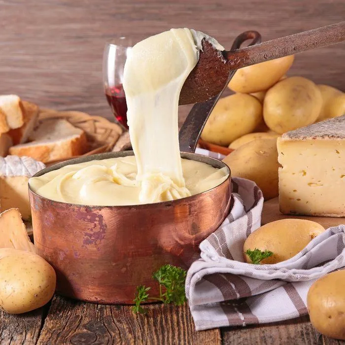
🧺Les ingrédients
- 1 kgde pommes de terre à chair farineuse (bintje)
- 600 gde tome fraîche de l'Aubrac, en fines lamelles
- 20 clde crème fraîche épaisse
- 60 gde beurre
- 2gousses d'ail
- sel, poivre
👩🍳La préparation
- Cuire : épluchez les pommes de terre et faites-les cuire à l'eau salée avec les gousses d'ail, environ 25 minutes.
- Écraser : égouttez et passez les pommes de terre et l'ail au presse-purée (jamais au mixeur, qui rendrait la purée collante).
- Enrichir : remettez la purée sur feu doux dans une casserole à fond épais, ajoutez le beurre et la crème, salez et poivrez.
- La tome : ajoutez la tome en lamelles en plusieurs fois, sans cesser de remuer avec une spatule en bois.
- Filer : travaillez vigoureusement en soulevant haut la spatule et en dessinant des huit, 10 à 15 minutes, jusqu'à ce que la pâte soit lisse, brillante et file en un long ruban.
- Servir : servez aussitôt, avec une saucisse grillée.
🍷Les vins d'accompagnement
Marcillac
AOP Marcillac · Aveyron (12)
Entraygues-Le Fel blanc
AOP · Aveyron (12)
Estaing rouge
AOP Estaing · Aveyron (12)
Gaillac rouge
AOP Gaillac · Tarn (81)
L'anchoïade nîmoise
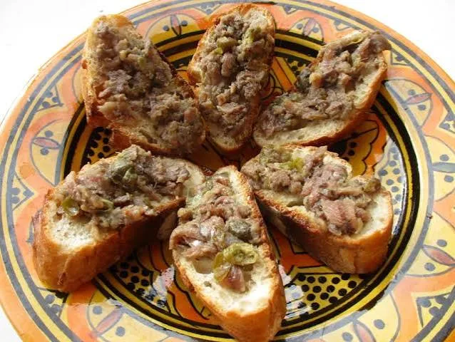
🧺Les ingrédients
- 150 gde filets d'anchois à l'huile
- 2 goussesd'ail
- 1 c. à s.de câpres
- 15 cld'huile d'olive
- 1 filetde vinaigre de vin
- QSde poivre du moulin
- QSde pain de campagne grillé
- QSde légumes crus de saison : carotte, céleri, chou-fleur
👩🍳La préparation
- Égoutter les anchois : égouttez soigneusement les filets d'anchois de leur huile de conservation.
- Mixer la base : placez les anchois, l'ail dégermé et les câpres dans un mixeur et mixez jusqu'à obtenir une pâte grossière.
- Monter à l'huile : ajoutez l'huile d'olive en filet en continuant de mixer, jusqu'à obtenir une texture crémeuse et homogène.
- Équilibrer : ajoutez un filet de vinaigre pour équilibrer les saveurs, puis poivrez selon le goût : l'anchois se suffit généralement en sel.
- Réserver au frais : laissez reposer l'anchoïade au réfrigérateur au moins 30 minutes pour que les arômes se lient.
- Servir : servez-la tartinée sur du pain grillé, ou en trempette avec des bâtonnets de légumes crus.
🍷Les vins d'accompagnement
Costières de Nîmes rosé
AOP Costières de Nîmes · Gard (30)
Picpoul de Pinet
AOP Languedoc Picpoul de Pinet · Hérault (34)
Clairette de Bellegarde
AOP Clairette de Bellegarde · Gard (30)
L'azinat ariégeois
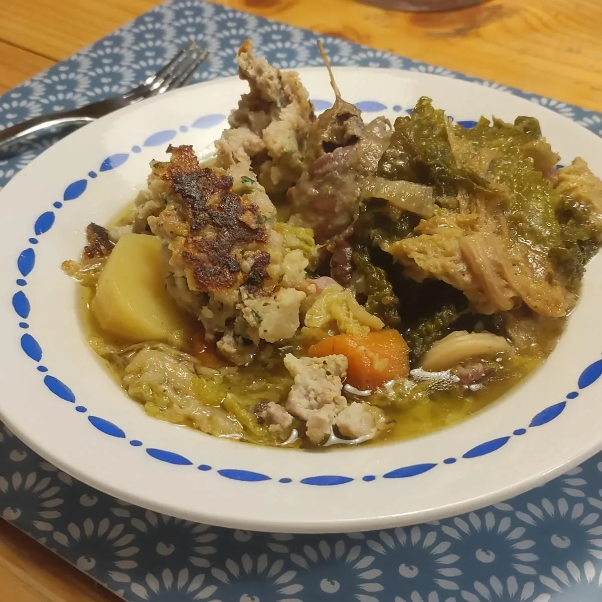
🧺Les ingrédients
- 2choux verts
- 10carottes
- 8pommes de terre
- 3jarrets de porc
- 8cuisses de canard confites
- 3saucisses de couenne
- 1os de jambon
- sel, poivre
- pain de campagne et fromage râpé pour la soupe
- 350 gde chair à saucisse
- 150 gde jambon cru de pays
- 3œufs
- 1 bouquetde persil
- 2gousses d'ail
- 1 bolde pain trempé dans le lait
- 1 c. à s.de graisse de canard
👩🍳La préparation
- Blanchir : blanchissez les choux entiers 10 minutes à l'eau bouillante, puis égouttez-les.
- La potée : dans une grande marmite d'eau froide, mettez les choux, les carottes, l'os de jambon, les jarrets et les saucisses. Salez légèrement, poivrez et laissez cuire doucement 2 heures.
- La rouzole : hachez ensemble la chair à saucisse, le jambon, l'ail et le persil. Ajoutez les œufs et le pain pressé. Formez une grande galette et faites-la dorer des deux côtés dans la graisse de canard.
- Finir : ajoutez à la potée les pommes de terre, les confits et la rouzole. Laissez cuire encore 1 heure à feu doux.
- La soupe : versez du bouillon sur des tranches de pain de campagne, parsemez de fromage râpé et faites gratiner au four.
- Servir : servez d'abord la soupe gratinée, puis les viandes, les légumes et la rouzole coupée en parts.
🍷Les vins d'accompagnement
Ariège rouge
IGP Ariège · Ariège (09)
Madiran
AOP Madiran · Gers (32), Hautes-Pyrénées (65)
Malepère rouge
AOP Malepère · Aude (11)
Fronton rouge
AOP Fronton · Haute-Garonne (31)
Les boles de picolat
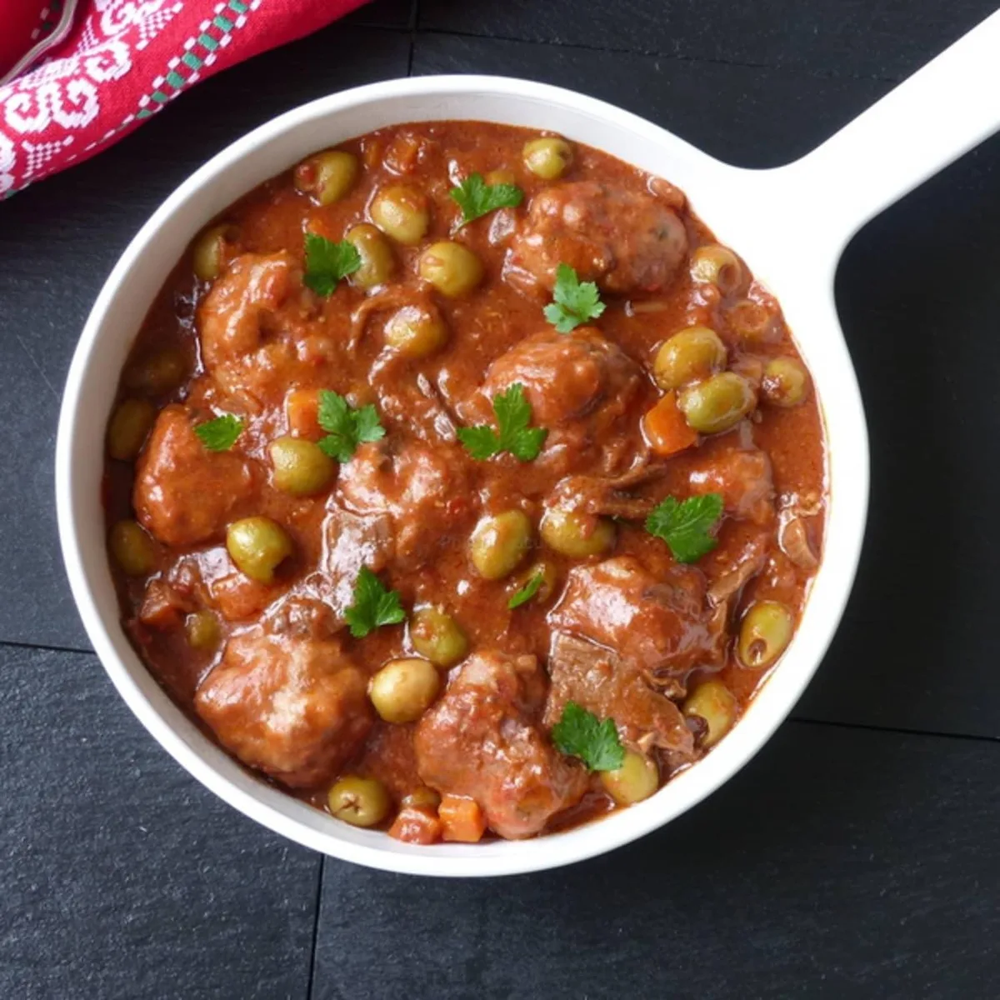
🧺Les ingrédients
- 400 gde bœuf haché
- 400 gde porc haché
- 2œufs
- 2 tranchesde pain rassis trempé dans du lait
- 4 goussesd'ail
- 1 bottede persil
- QSde farine, sel et poivre
- 1oignon
- 800 gde tomates mûres ou pelées
- 150 gd'olives noires
- 200 gde champignons de Paris
- QSd'huile d'olive
👩🍳La préparation
- Préparer la farce : mélangez les viandes hachées avec les œufs, le pain essoré, l'ail et le persil hachés. Salez et poivrez.
- Façonner les boulettes : formez des boulettes de la taille d'une petite balle et roulez-les légèrement dans la farine.
- Saisir les boulettes : faites-les dorer sur toutes les faces dans une cocotte avec un peu d'huile d'olive, puis réservez-les.
- Préparer la sauce : dans la même cocotte, faites revenir l'oignon émincé, ajoutez les tomates concassées et laissez mijoter 15 minutes.
- Mijoter l'ensemble : remettez les boulettes dans la sauce, ajoutez les olives et les champignons émincés, couvrez et laissez mijoter environ 1 heure à feu doux.
- Servir : servez chaud, accompagné de haricots blancs cocos ou de riz.
🍷Les vins d'accompagnement
Côtes du Roussillon rouge
AOP Côtes du Roussillon · Pyrénées-Orientales (66)
Corbières rouge
AOP Corbières · Aude (11)
Collioure rosé
AOP Collioure · Pyrénées-Orientales (66)
La bourride de baudroie
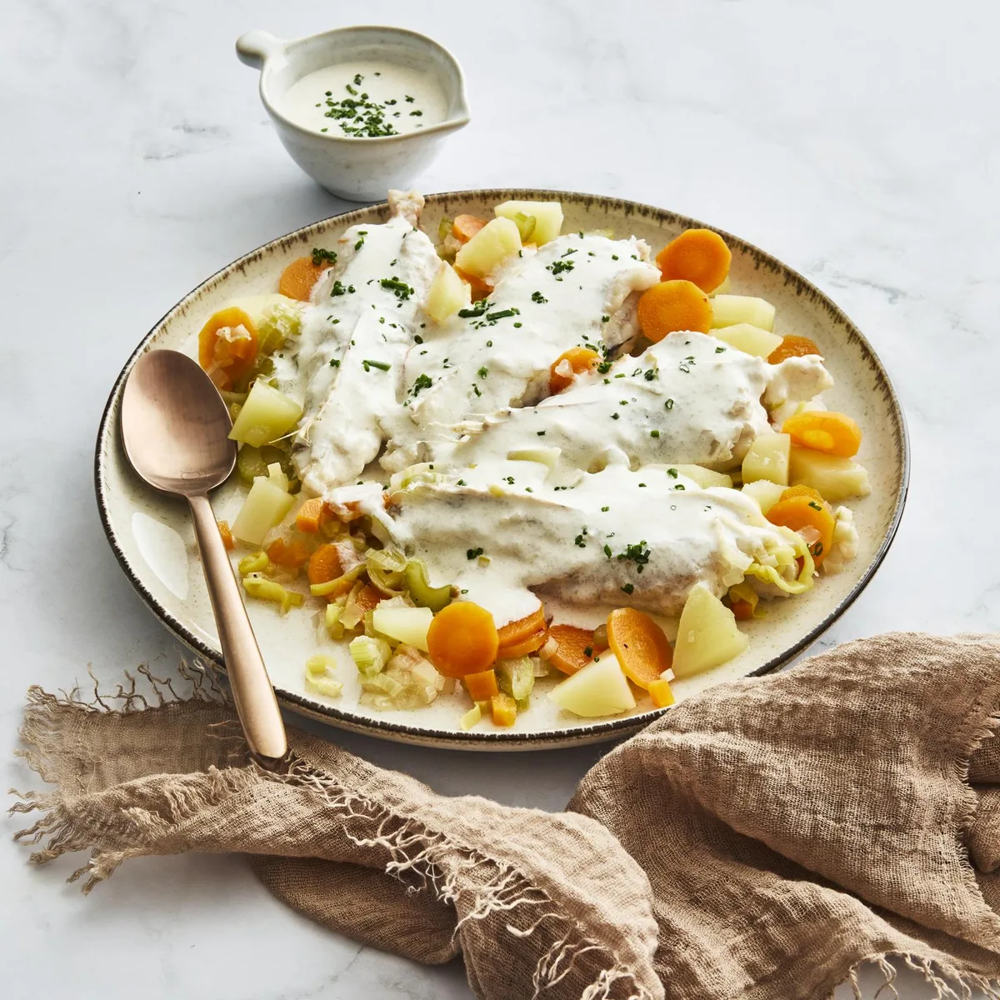
🧺Les ingrédients
- 1,5 kgde baudroie (lotte) en tronçons
- 2poireaux (le blanc)
- 2carottes
- 1branche de céleri
- 1bulbe de fenouil
- 1oignon
- 25 clde vin blanc sec
- 1bouquet garni
- 1zeste d'orange
- 2 c. à s.d'huile d'olive
- 4gousses d'ail
- 2jaunes d'œufs
- 25 cld'huile d'olive
- ½citron
- sel, poivre
- croûtons frottés d'ail pour servir
👩🍳La préparation
- L'aïoli : pilez l'ail avec une pincée de sel, ajoutez les jaunes, puis montez à l'huile d'olive versée en filet, comme une mayonnaise. Ajoutez un trait de citron et réservez au frais.
- La brunoise : taillez les poireaux, carottes, céleri, fenouil et oignon en petits dés.
- Le bouillon : faites suer la brunoise dans l'huile d'olive, ajoutez le vin blanc, le bouquet garni, le zeste d'orange et 50 cl d'eau. Laissez frémir 15 minutes.
- Le poisson : déposez les tronçons de baudroie dans le bouillon et faites-les pocher 10 à 12 minutes à petits frémissements. Retirez-les et gardez-les au chaud.
- Lier : hors du feu, versez une louche de bouillon chaud sur la moitié de l'aïoli en fouettant, puis reversez le tout dans la casserole. Remettez sur feu très doux et remuez jusqu'à ce que la sauce épaississe, sans jamais bouillir.
- Servir : nappez le poisson de sauce et servez avec des croûtons et le reste d'aïoli.
🍷Les vins d'accompagnement
Picpoul de Pinet
AOP · Hérault (34)
Languedoc blanc (La Clape)
AOP La Clape · Aude (11)
Saint-Chinian blanc
AOP Saint-Chinian · Hérault (34)
Languedoc rosé
AOP Languedoc · Hérault (34)
La brandade de Nîmes
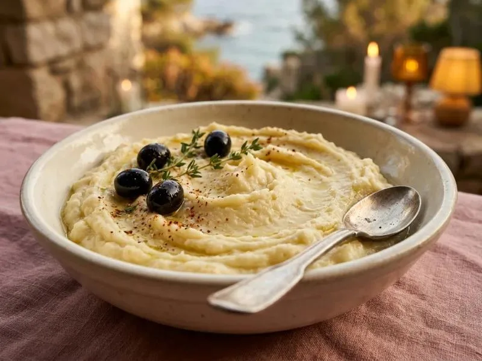
🧺Les ingrédients
- 800 gde morue salée (filet épais)
- 30 cld'huile d'olive
- 15 clde lait entier
- 2gousses d'ail
- ½citron (facultatif)
- poivre blanc
- 1baguette ou pain de campagne
- 1gousse d'ail pour frotter
👩🍳La préparation
- Dessaler : la veille, mettez la morue à dessaler 24 heures dans de l'eau froide, peau vers le haut, en changeant l'eau 4 ou 5 fois.
- Pocher : mettez la morue dans une casserole d'eau froide, portez à frémissement et laissez pocher 8 minutes sans bouillir. Égouttez, retirez peau et arêtes, et effeuillez la chair.
- Chauffer : faites tiédir séparément l'huile d'olive et le lait, sans les faire bouillir.
- Monter : dans une casserole à fond épais, sur feu très doux, écrasez la morue à la spatule avec l'ail pilé. Versez l'huile en mince filet en remuant énergiquement, en alternant avec quelques cuillerées de lait, jusqu'à obtenir une pâte blanche et onctueuse.
- Assaisonner : poivrez, ajoutez un trait de citron si vous le souhaitez. Ne salez qu'après avoir goûté.
- Servir : servez tiède, avec des tranches de pain grillé frottées d'ail.
🍷Les vins d'accompagnement
Costières de Nîmes blanc
AOP Costières de Nîmes · Gard (30)
Picpoul de Pinet
AOP · Hérault (34)
Tavel
AOP Tavel · Gard (30)
Clairette de Bellegarde
AOP · Gard (30)
Le cassoulet de Castelnaudary
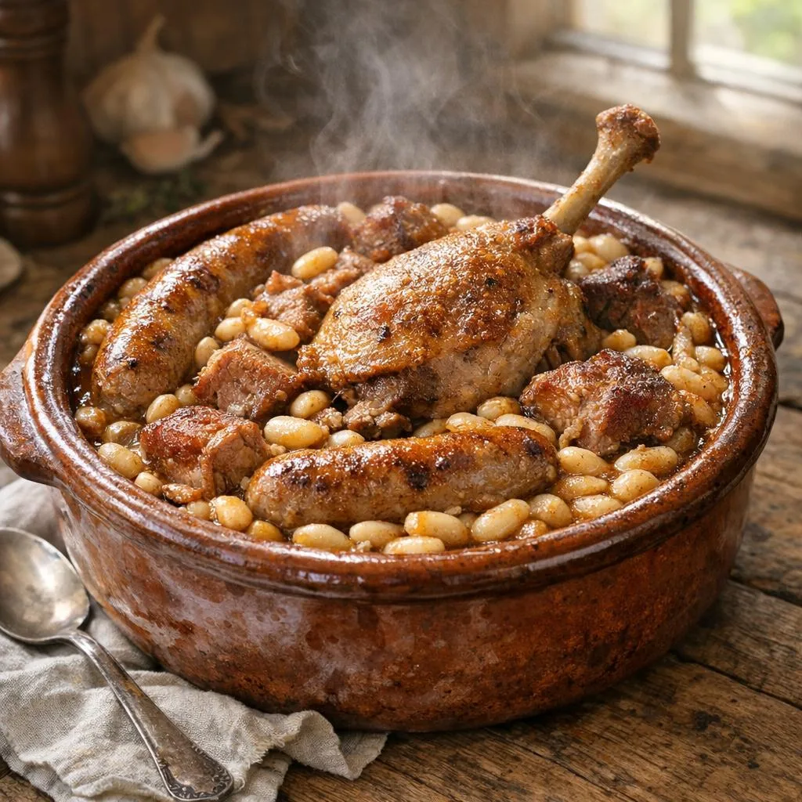
🧺Les ingrédients
- 1 kgde haricots lingots de Castelnaudary
- 300 gde couenne fraîche
- 1carotte
- 1oignon
- 1bouquet garni
- 4gousses d'ail
- 4cuisses de canard (ou d'oie) confites
- 800 gde saucisse de Toulouse
- 600 gd'épaule de porc
- 1jarret de porc demi-sel
- 3 c. à s.de graisse de canard
- sel, poivre
👩🍳La préparation
- Tremper : la veille, mettez les haricots à tremper dans un grand volume d'eau froide.
- Blanchir : égouttez-les, couvrez d'eau froide, portez à ébullition 5 minutes, puis égouttez de nouveau.
- Le bouillon : remettez les haricots dans une marmite avec la couenne coupée en lanières, le jarret, la carotte, l'oignon, le bouquet garni et l'ail. Couvrez d'eau, sans saler, et laissez cuire 1 h 30 à petit feu : les haricots doivent rester entiers.
- Les viandes : pendant ce temps, faites dorer dans la graisse de canard l'épaule de porc coupée en gros morceaux, puis la saucisse. Faites chauffer les confits pour en retirer la graisse.
- Monter la cassole : préchauffez le four à 150 °C. Tapissez le fond de la cassole de couenne, puis alternez haricots et viandes, en finissant par les haricots. Mouillez avec le bouillon de cuisson jusqu'à hauteur, salez et poivrez.
- Cuire : enfournez 2 h 30 à 3 heures. Une croûte dorée se forme : cassez-la et enfoncez-la à la cuillère, et recommencez plusieurs fois (la tradition parle de sept fois). Ajoutez du bouillon si le cassoulet sèche.
- Servir : servez brûlant, dans la cassole.
🍷Les vins d'accompagnement
Malepère rouge
AOP Malepère · Aude (11)
Corbières rouge
AOP Corbières · Aude (11)
Cabardès rouge
AOP Cabardès · Aude (11)
Fronton rouge
AOP Fronton · Haute-Garonne (31)
Le confit de canard
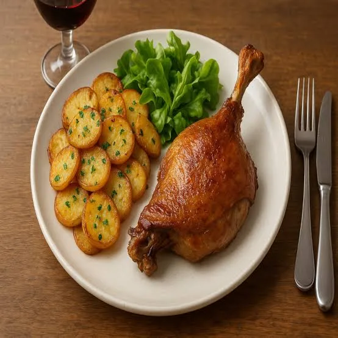
🧺Les ingrédients
- 6cuisses de canard gras
- 60 gde gros sel
- 1 c. à caféde poivre noir concassé
- 3 branchesde thym
- 2 feuillesde laurier
- 1,5 kgde graisse de canard
- 6 goussesd'ail blanc de Lomagne
- 1 kgde pommes de terre
- 1 bouquetde persil plat
- QSd'ail haché
👩🍳La préparation
- Saler : frottez les cuisses avec le gros sel, le poivre, le thym émietté et le laurier. Placez-les dans un plat, couvrez et laissez reposer 12 heures au réfrigérateur.
- Rincer : rincez rapidement les cuisses à l'eau froide pour retirer l'excès de sel, puis séchez-les soigneusement avec du papier absorbant.
- Confire : faites fondre la graisse dans une cocotte en fonte. Plongez-y les cuisses et les gousses d'ail en chemise : elles doivent être entièrement immergées. Laissez cuire 2 h 30 à 3 heures à très petit frémissement (80 à 90 °C), sans jamais bouillir.
- Vérifier la cuisson : la viande est prête lorsqu'une pique traverse la chair sans résistance et que l'os se détache facilement.
- Conserver : rangez les cuisses dans un pot en grès ou un bocal stérilisé et recouvrez-les entièrement de graisse filtrée. Une fois figée, la graisse protège le confit plusieurs semaines au frais.
- Servir : faites dorer les cuisses côté peau dans une poêle chaude jusqu'à ce qu'elles soient bien croustillantes. Servez avec des pommes de terre sautées dans la graisse de canard, avec l'ail et le persil hachés.
🍷Les vins d'accompagnement
Fronton rouge
AOP Fronton · Haute-Garonne (31) et Tarn-et-Garonne (82)
Cahors
AOP Cahors · Lot (46)
Coteaux du Quercy rouge
AOP Coteaux du Quercy · Lot (46) et Tarn-et-Garonne (82)
Les escargots à la carcassonnaise
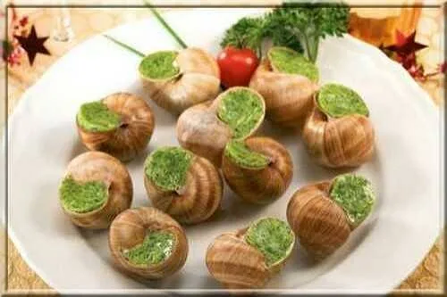
🧺Les ingrédients
- 6 douzainesd'escargots petits-gris préparés
- 150 gde jambon cru
- 2oignons
- 4 goussesd'ail
- 800 gde tomates mûres
- 20 clde vin blanc sec
- 100 gde cerneaux de noix
- 4filets d'anchois
- 1piment doux ou piment d'Espelette
- QSde persil et de chapelure
- QSde sel et de poivre
👩🍳La préparation
- Préparer les escargots : faites jeûner les escargots plusieurs jours, puis dégorgez-les au gros sel et au vinaigre avant de les rincer abondamment. Avec des escargots déjà préparés, passez directement à l'étape 3.
- Cuire au court-bouillon : faites-les cuire environ 3 heures dans un court-bouillon aromatisé, puis décoquillez-les si la recette le prévoit, ou laissez-les dans leur coquille.
- Préparer la sauce : faites revenir le jambon cru coupé en petits morceaux avec l'oignon et l'ail émincés, puis ajoutez les tomates concassées.
- Ajouter noix et anchois : incorporez les cerneaux de noix pilés et les filets d'anchois délayés dans un peu de sauce chaude, pour lier l'ensemble.
- Mijoter les escargots : ajoutez les escargots à la sauce avec le vin blanc. Salez, poivrez, relevez de piment doux et laissez mijoter à feu doux environ 45 minutes.
- Finir et servir : parsemez de persil ciselé et d'un peu de chapelure grillée, puis servez bien chaud dans des cassolettes individuelles, avec du pain grillé.
🍷Les vins d'accompagnement
Blanquette de Limoux
AOP Blanquette de Limoux · Aude (11)
Malepère rouge
AOP Malepère · Aude (11)
Limoux blanc
AOP Limoux · Aude (11)
L'estofinado aveyronnais
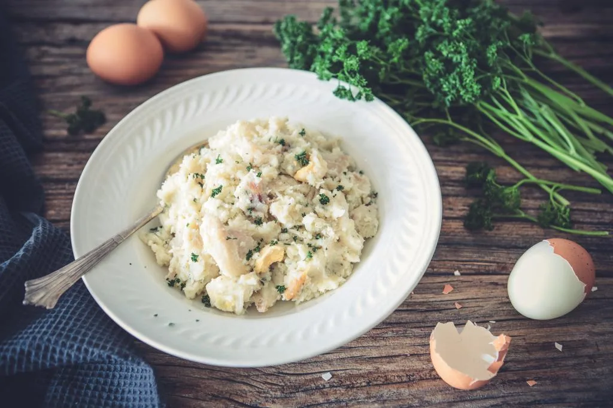
🧺Les ingrédients
- 500 gde stockfisch (morue séchée)
- 1 kgde pommes de terre
- 4œufs (2 durs, 2 crus)
- 4gousses d'ail
- 1 bouquetde persil plat
- 15 clde crème fraîche
- 10 cld'huile de noix
- sel, poivre
👩🍳La préparation
- Tremper : le stockfisch est très dur : faites-le tremper une semaine dans l'eau froide, en changeant l'eau chaque jour. Il ramollit et gonfle.
- Pocher : coupez-le en morceaux et faites-le pocher 30 minutes dans l'eau frémissante. Égouttez, retirez la peau et les arêtes, et effeuillez la chair.
- Les pommes de terre : faites cuire les pommes de terre épluchées à l'eau, puis écrasez-les grossièrement à la fourchette avec le poisson, dans une cocotte.
- Le hachis : hachez l'ail et le persil, écrasez les œufs durs.
- Mélanger : sur feu doux, ajoutez le hachis, les œufs durs écrasés et les œufs crus battus, la crème, puis l'huile de noix en filet, en remuant à la cuillère de bois. Salez peu et poivrez.
- Servir : servez bien chaud, avec un filet d'huile de noix sur le dessus.
🍷Les vins d'accompagnement
Entraygues-Le Fel blanc
AOP · Aveyron (12)
Marcillac
AOP Marcillac · Aveyron (12)
Gaillac blanc sec
AOP Gaillac · Tarn (81)
Cahors
AOP Cahors · Lot (46)
Les farçous aveyronnais
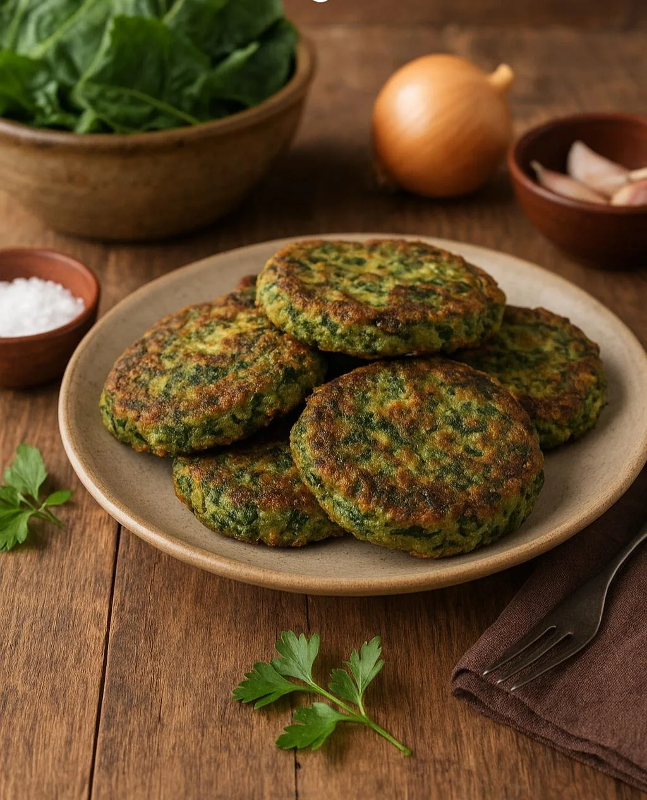
🧺Les ingrédients
- 500 gde feuilles de blettes
- 250 gde chair à saucisse (facultatif)
- 1oignon
- 3gousses d'ail
- 1 bouquetde persil plat
- 3œufs
- 150 gde farine
- 20 clde lait
- sel, poivre
- huile d'olive pour la cuisson
👩🍳La préparation
- Les blettes : lavez les feuilles de blettes (gardez les côtes pour un gratin), blanchissez-les 2 minutes à l'eau bouillante, égouttez-les et pressez-les bien pour en retirer l'eau.
- Hacher : hachez finement les blettes, le persil, l'oignon et l'ail.
- La pâte : dans un saladier, battez les œufs, ajoutez la farine puis le lait petit à petit, pour obtenir une pâte épaisse sans grumeaux.
- Mélanger : ajoutez le hachis de légumes et la chair à saucisse, salez et poivrez. La préparation doit être épaisse.
- Cuire : faites chauffer l'huile dans une poêle. Déposez des cuillerées de pâte et aplatissez-les en galettes. Faites-les dorer 4 à 5 minutes de chaque côté, à feu moyen, pour que la viande cuise à cœur.
- Servir : égouttez sur du papier absorbant. Servez chaud, tiède ou froid, avec une salade verte.
🍷Les vins d'accompagnement
Marcillac
AOP Marcillac · Aveyron (12)
Entraygues-Le Fel blanc
AOP · Aveyron (12)
Côtes de Millau rosé
AOP Côtes de Millau · Aveyron (12)
Gaillac blanc sec
AOP Gaillac · Tarn (81)
Le foie gras du Quercy
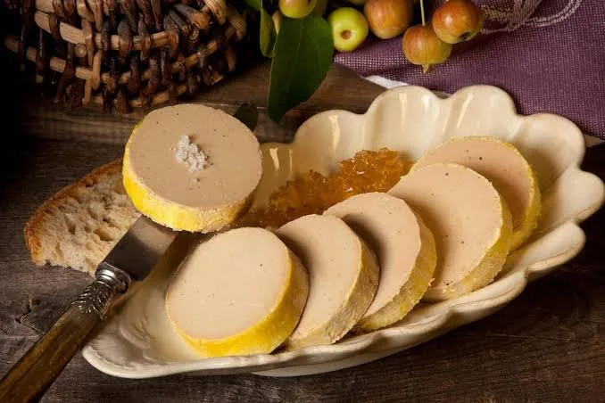
🧺Les ingrédients
- 1foie gras de canard cru extra (500 à 600 g)
- 8 gde sel fin (14 g par kilo)
- 2 gde poivre blanc moulu
- 1 pincéede sucre
- 3 c. à s.d'armagnac ou de vin moelleux
- 2 lde bouillon de volaille
- 1torchon propre en coton
- QSde film alimentaire
- QSde fleur de sel et de poivre concassé
👩🍳La préparation
- Tempérer et déveiner : sortez le foie gras du réfrigérateur 1 heure à l'avance pour qu'il s'assouplisse. Séparez les deux lobes et retirez délicatement les veines à l'aide d'un petit couteau.
- Assaisonner : saupoudrez le foie de sel, de poivre et de sucre sur toutes ses faces, puis arrosez d'armagnac. Reconstituez-le et laissez mariner 2 heures au frais.
- Rouler : placez le foie sur un film alimentaire, roulez-le en un boudin serré, puis enveloppez-le dans le torchon. Ficelez fermement les extrémités.
- Pocher : portez le bouillon à frémissement (environ 80 °C), plongez le torchon et laissez pocher 8 à 10 minutes sans bouillir.
- Refroidir : sortez le foie gras et plongez-le aussitôt dans un bain d'eau glacée. Resserrez le torchon, puis réservez 24 à 48 heures au réfrigérateur.
- Servir : tranchez avec un couteau trempé dans l'eau chaude. Servez avec de la fleur de sel, du poivre concassé, du pain de campagne grillé et une compotée de chasselas de Moissac ou de figues.
🍷Les vins d'accompagnement
Gaillac doux
AOP Gaillac · Tarn (81)
Pacherenc du Vic-Bilh moelleux
AOP Pacherenc du Vic-Bilh · Gers (32) et Pyrénées-Atlantiques (64)
Jurançon moelleux
AOP Jurançon · Pyrénées-Atlantiques (64)
Le fréginat audois
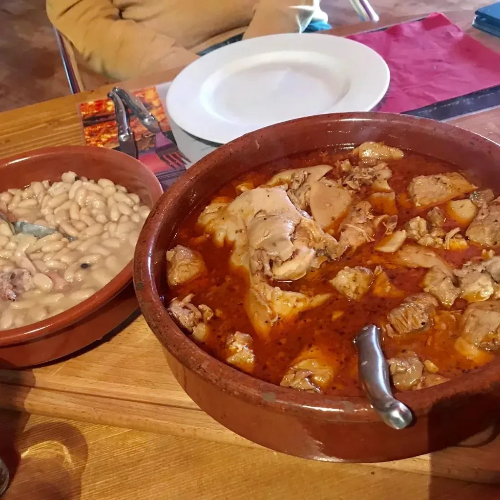
🧺Les ingrédients
- 1,5 kgde porc (épaule et collier)
- 4oignons
- 6gousses d'ail
- 500 gde tomates concassées
- 20 clde vin rouge des Corbières
- 1bouquet garni (thym, laurier)
- 2 c. à s.de saindoux ou de graisse de canard
- 1 pincéede piment d'Espelette (facultatif)
- sel, poivre
- 500 gde haricots blancs cuits
- ½ bouquetde persil
👩🍳La préparation
- Découper : coupez le porc en morceaux de 4 à 5 cm.
- Dorer : faites-les dorer dans le saindoux, dans une cocotte en fonte, sur toutes les faces. Salez et poivrez.
- Les oignons : ajoutez les oignons émincés et l'ail haché, et faites-les fondre 10 minutes à feu moyen.
- Mouiller : versez le vin rouge, laissez réduire quelques minutes, puis ajoutez les tomates, le bouquet garni et le piment.
- Mijoter : couvrez et laissez mijoter 2 heures à feu doux, en remuant de temps en temps. La viande doit être fondante et la sauce épaisse.
- Servir : servez avec des haricots blancs réchauffés dans un peu de sauce, parsemés de persil.
🍷Les vins d'accompagnement
Corbières rouge
AOP Corbières · Aude (11)
Corbières-Boutenac
AOP Corbières-Boutenac · Aude (11)
Fitou
AOP Fitou · Aude (11)
Minervois rouge
AOP Minervois · Aude (11)
La garbure gasconne
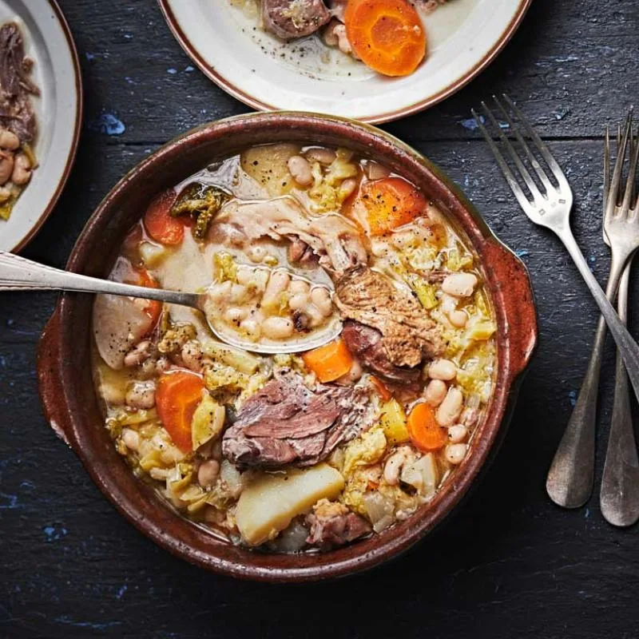
🧺Les ingrédients
- 4cuisses de canard confites
- 1os ou talon de jambon de pays
- 200 gde ventrèche (poitrine salée)
- 2 c. à s.de graisse de canard
- 1chou vert frisé
- 300 gde haricots tarbais secs
- 4pommes de terre
- 3carottes
- 2navets
- 2poireaux
- 1oignon
- 4gousses d'ail
- 1bouquet garni
- sel, poivre
👩🍳La préparation
- Tremper : la veille, mettez les haricots à tremper dans l'eau froide.
- Le bouillon : dans une grande marmite, mettez 4 litres d'eau, l'os de jambon, la ventrèche, les haricots égouttés et le bouquet garni. Portez à ébullition et laissez cuire 1 heure à petit feu.
- Les légumes : épluchez et coupez carottes, navets, poireaux, oignon et ail ; faites-les revenir dans la graisse de canard, puis ajoutez-les au bouillon avec les pommes de terre en morceaux.
- Le chou : blanchissez le chou 5 minutes à l'eau bouillante, émincez-le et ajoutez-le à la marmite. Laissez cuire 1 h 30 à feu doux.
- Le confit : 30 minutes avant la fin, ajoutez les cuisses de canard confites, débarrassées de leur graisse.
- Servir : goûtez et rectifiez l'assaisonnement. Servez dans de grandes assiettes creuses, sur une tranche de pain de campagne, avec un morceau de confit. Et finissez par un chabrot.
🍷Les vins d'accompagnement
Madiran
AOP Madiran · Gers (32), Hautes-Pyrénées (65)
Saint-Mont rouge
AOP Saint-Mont · Gers (32)
Côtes de Gascogne rouge
IGP · Gers (32)
Pacherenc du Vic-Bilh sec
AOP · Gers (32), Hautes-Pyrénées (65)
La gardiane de taureau
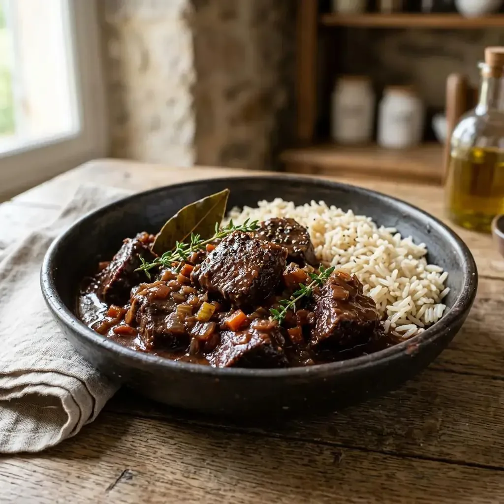
🧺Les ingrédients
- 1,5 kgde taureau de Camargue (collier, joue, paleron)
- 1 lde vin rouge corsé
- 2oignons
- 2carottes
- 4gousses d'ail
- 1zeste d'orange
- 1bouquet garni (thym, laurier)
- 200 gd'olives noires (ou vertes)
- 3 c. à s.d'huile d'olive
- 2 c. à s.de farine
- 2filets d'anchois (facultatif)
- sel, poivre
- 400 gde riz de Camargue pour servir
👩🍳La préparation
- Mariner : la veille, coupez la viande en gros cubes. Mettez-la dans un grand saladier avec les oignons et les carottes émincés, l'ail, le zeste d'orange et le bouquet garni. Couvrez de vin rouge et laissez mariner une nuit au frais.
- Égoutter : le lendemain, égouttez la viande et les légumes, en réservant le vin de la marinade.
- Saisir : faites dorer la viande dans l'huile d'olive, dans une cocotte en fonte. Ajoutez les légumes, faites-les revenir, puis saupoudrez de farine et mélangez.
- Mouiller : versez le vin de la marinade, portez à ébullition, puis baissez le feu. Ajoutez les anchois, salez et poivrez.
- Mijoter : couvrez et laissez mijoter 2 heures à feu très doux. Ajoutez les olives et poursuivez la cuisson 1 heure : la viande doit être fondante.
- Servir : servez avec du riz de Camargue, cuit simplement.
🍷Les vins d'accompagnement
Costières de Nîmes rouge
AOP Costières de Nîmes · Gard (30)
Côtes du Rhône Villages rouge
AOP · Gard (30)
Corbières rouge
AOP Corbières · Aude (11)
Sable de Camargue rouge
IGP Sable de Camargue · Gard (30)
La macaronade sétoise
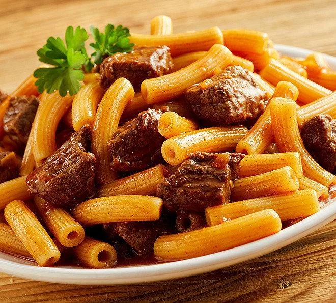
🧺Les ingrédients
- 8fines tranches de bœuf (paleron)
- 4gousses d'ail
- 1 bouquetde persil plat
- 50 gde lard ou de jambon cru haché
- ficelle de cuisine
- 600 gde saucisse de Toulouse
- 800 gde travers de porc
- 2oignons
- 2 kgde tomates concassées (ou de coulis)
- 2 c. à s.de concentré de tomate
- 20 clde vin blanc sec
- 1bouquet garni
- 4 c. à s.d'huile d'olive
- 800 gde gros macaronis
- 100 gde parmesan râpé
👩🍳La préparation
- Les brageoles : hachez ensemble l'ail, le persil et le lard. Étalez ce hachis sur les tranches de bœuf, roulez-les et ficelez-les.
- Dorer : dans une grande cocotte, faites dorer dans l'huile d'olive les brageoles, les travers coupés en morceaux et la saucisse en tronçons. Réservez.
- La sauce : faites revenir les oignons émincés dans la même cocotte, déglacez au vin blanc, puis ajoutez les tomates, le concentré et le bouquet garni.
- Mijoter : remettez toutes les viandes, couvrez et laissez mijoter au moins 3 heures à feu très doux, en remuant de temps en temps. Salez et poivrez en fin de cuisson.
- Les pâtes : faites cuire les macaronis al dente dans une grande quantité d'eau salée.
- Servir : égouttez les pâtes, mélangez-les avec une bonne partie de la sauce, parsemez de parmesan. Servez les viandes à côté, dans le reste de sauce.
🍷Les vins d'accompagnement
Languedoc rouge (Grés de Montpellier)
AOP Languedoc · Hérault (34)
Pic Saint-Loup
AOP Pic Saint-Loup · Hérault (34)
Faugères rouge
AOP Faugères · Hérault (34)
Languedoc rosé
AOP Languedoc · Hérault (34)
Le magret de canard
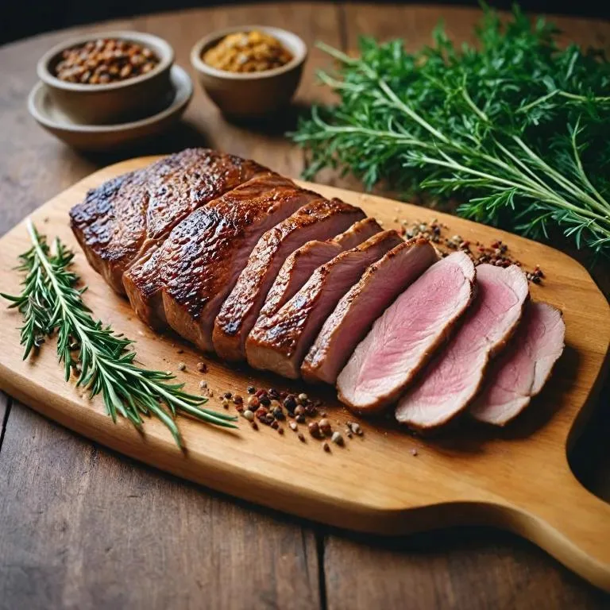
🧺Les ingrédients
- 2magrets de canard (350 à 400 g chacun)
- fleur de sel, poivre du moulin
- 800 gde pommes de terre
- 2gousses d'ail
- ½ bouquetde persil plat
👩🍳La préparation
- Préparer : sortez les magrets du réfrigérateur 30 minutes avant. Incisez la peau en croisillons, sans entamer la chair.
- Côté peau : posez-les côté peau dans une poêle froide, puis allumez à feu moyen. Laissez cuire 8 à 10 minutes : la graisse fond et la peau devient croustillante. Videz la graisse au fur et à mesure et gardez-la.
- Côté chair : retournez les magrets et faites-les cuire 3 à 4 minutes côté chair.
- Reposer : salez, poivrez et laissez reposer 5 minutes sous une feuille d'aluminium, peau vers le haut : la chair se détend et reste rosée.
- Les pommes de terre : pendant ce temps, faites sauter les pommes de terre en rondelles dans la graisse récupérée, 20 minutes, puis ajoutez l'ail et le persil hachés.
- Servir : tranchez les magrets en biais et servez avec les pommes de terre.
🍷Les vins d'accompagnement
Madiran
AOP Madiran · Gers (32), Hautes-Pyrénées (65)
Saint-Mont rouge
AOP Saint-Mont · Gers (32)
Cahors
AOP Cahors · Lot (46)
Gaillac rouge
AOP Gaillac · Tarn (81)
Les manouls lozériens
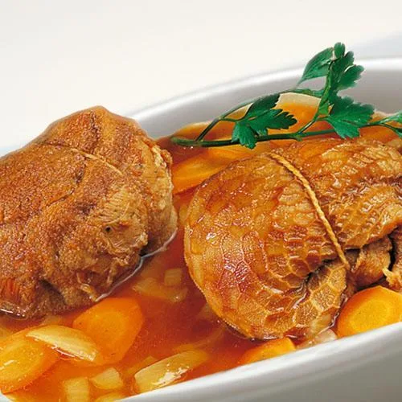
🧺Les ingrédients
- 1,5 kgde panses et tripes de mouton (ou d'agneau), nettoyées et blanchies
- 1fraise de veau
- 300 gde ventrèche (poitrine salée)
- ficelle de cuisine
- sel, poivre
- 75 clde vin blanc sec
- 1oignon piqué de 3 clous de girofle
- 3carottes en rondelles
- 1os de jambon sec
- 1bouquet garni
- eau
👩🍳La préparation
- Découper : découpez la panse en carrés d'environ 12 cm. Coupez les tripes, la fraise de veau et la ventrèche en lanières.
- Garnir : sur chaque carré de panse, disposez des lanières de tripes, de fraise et de ventrèche. Salez et poivrez.
- Ficeler : rabattez les bords pour former un paquet et ficelez-le solidement.
- Le bouillon : dans une grande cocotte, disposez les paquets avec l'oignon, les carottes, l'os de jambon et le bouquet garni. Couvrez de vin blanc et complétez d'eau à hauteur.
- Cuire : portez à frémissement, couvrez et laissez cuire environ 7 heures à très petit feu, ou au four à 120 °C.
- Servir : retirez les ficelles et servez très chaud dans le bouillon, avec des pommes de terre vapeur.
🍷Les vins d'accompagnement
Gaillac blanc sec
AOP Gaillac · Tarn (81)
Marcillac
AOP Marcillac · Aveyron (12)
Côtes de Millau rouge
AOP Côtes de Millau · Aveyron (12)
Entraygues-Le Fel blanc
AOP · Aveyron (12)
Le millas ariégeois
🧺Les ingrédients
- 400 gde farine de maïs
- 300 gde farine de froment
- 1,5 lde lait
- 1,5 ld'eau
- 1 c. à caféde sel
- 120 gde beurre
- 120 gde sucre en poudre
- 15 cld'eau de fleur d'oranger
- QSde beurre pour dorer
👩🍳La préparation
- Faire chauffer les liquides : dans un grand faitout, portez l'eau et le lait à ébullition, puis ajoutez le sel.
- Verser la farine de maïs : ajoutez la farine de maïs en pluie en fouettant vigoureusement pour éviter les grumeaux.
- Ajouter la farine de froment : versez ensuite la farine de froment, toujours en pluie, sans cesser de remuer.
- Parfumer : incorporez le beurre en morceaux, le sucre puis l'eau de fleur d'oranger.
- Cuire longuement : faites cuire au moins 1 heure à feu doux en remuant régulièrement, jusqu'à obtenir une pâte très épaisse.
- Refroidir et dorer : versez dans un plat, laissez refroidir, découpez en carrés puis dorez-les à la poêle dans un peu de beurre.
🍷Les vins d'accompagnement
Jurançon moelleux
AOP Jurançon · Pyrénées-Atlantiques (64)
Gaillac doux
AOP Gaillac · Tarn (81)
Cidre doux
Cidre
La mique au petit salé
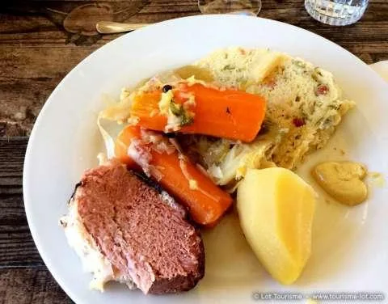
🧺Les ingrédients
- 500 gde farine
- 15 gde levure fraîche de boulanger
- 2œufs
- 50 gde graisse de canard (ou de beurre)
- 15 clde lait tiède
- 8 gde sel
- 100 gde pain rassis en cubes (facultatif)
- 1,2 kgde petit salé (poitrine et plat de côtes demi-sel)
- 1chou vert
- 4carottes
- 2navets
- 2poireaux
- 1oignon piqué de clous de girofle
- 1bouquet garni
- poivre
👩🍳La préparation
- Dessaler : faites dessaler le petit salé 2 heures dans l'eau froide, ou blanchissez-le 10 minutes.
- La pâte : délayez la levure dans le lait tiède. Mélangez la farine, le sel, les œufs, la graisse fondue et le lait, pétrissez 10 minutes, puis ajoutez les cubes de pain. Formez une boule et laissez lever 1 h 30 sous un linge.
- Le bouillon : mettez le petit salé dans une grande marmite avec l'oignon et le bouquet garni, couvrez d'eau et laissez cuire 1 heure à petit feu.
- Les légumes : ajoutez les carottes, les navets, les poireaux et le chou coupé en quartiers.
- La mique : déposez la boule de pâte sur le bouillon frémissant, couvrez et laissez cuire 45 minutes à 1 heure sans soulever le couvercle, en la retournant une fois à mi-cuisson.
- Servir : coupez la mique en tranches et servez-la avec le petit salé et les légumes, arrosés d'un peu de bouillon.
🍷Les vins d'accompagnement
Cahors
AOP Cahors · Lot (46)
Coteaux du Quercy
AOP Coteaux du Quercy · Lot (46)
Côtes du Lot rouge
IGP Côtes du Lot · Lot (46)
Marcillac
AOP Marcillac · Aveyron (12)
L'ouillade catalane
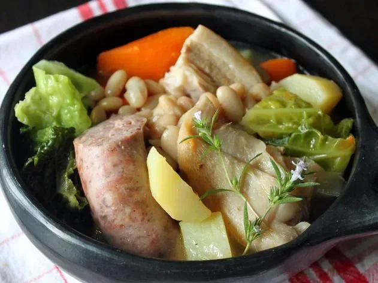
🧺Les ingrédients
- 500 gde poitrine de porc salée
- 1jarret de porc
- 200 gde couenne
- 4saucisses
- 1boudin catalan (facultatif)
- 2 c. à s.de saindoux (ou de sagi)
- 1chou vert
- 400 gde haricots blancs secs
- 6pommes de terre
- 2carottes
- 1navet
- 1oignon
- 4gousses d'ail
- 1bouquet garni
- sel, poivre
- pain de campagne pour servir
👩🍳La préparation
- Tremper : la veille, faites tremper les haricots. Faites dessaler la poitrine dans l'eau froide.
- Les haricots : faites cuire les haricots 1 heure dans une marmite d'eau non salée, avec la couenne coupée en lanières.
- Les viandes : dans une autre grande marmite, mettez le jarret, la poitrine, l'oignon, l'ail et le bouquet garni ; couvrez d'eau et laissez cuire 1 heure à petit feu.
- Les légumes : ajoutez le chou en quartiers, les carottes, le navet, puis les pommes de terre et les haricots égouttés avec la couenne.
- Le saindoux : ajoutez le saindoux, puis les saucisses et le boudin, et laissez mijoter encore 1 heure. Salez et poivrez.
- Servir : servez d'abord le bouillon sur des tranches de pain, puis les légumes et les viandes.
🍷Les vins d'accompagnement
Côtes du Roussillon rouge
AOP Côtes du Roussillon · Pyrénées-Orientales (66)
Côtes du Roussillon Villages Caramany
AOP · Pyrénées-Orientales (66)
Maury sec
AOP Maury · Pyrénées-Orientales (66)
Côtes Catalanes rouge
IGP Côtes Catalanes · Pyrénées-Orientales (66)
Les petits pâtés de Pézenas
🧺Les ingrédients
- 500 gde farine
- 200 gde beurre (ou de saindoux)
- 1œuf
- 15 cld'eau
- 8 gde sel
- 1jaune d'œuf pour dorer
- 500 gd'agneau (épaule ou gigot), haché
- 80 gde graisse de rognon (ou de lard) hachée
- 100 gde cassonade
- 1citron bio (le zeste)
- 1 pincéede sel
- 1 pincéede poivre
👩🍳La préparation
- La pâte : sablez la farine, le sel et le beurre, ajoutez l'œuf et l'eau, et formez une pâte ferme. Laissez reposer 1 heure au frais.
- La farce : mélangez l'agneau, la graisse, la cassonade, le zeste de citron, le sel et le poivre.
- Les bobines : préchauffez le four à 200 °C. Étalez la pâte sur 4 mm. Découpez 12 bandes de 15 x 4 cm, roulez-les en cylindres de 5 cm de diamètre et collez-les en les mouillant, sur des disques de pâte qui forment le fond.
- Garnir : remplissez les cylindres de farce, sans tasser.
- Fermer : couvrez d'un disque de pâte un peu plus petit, enfoncé de quelques millimètres, et soudez les bords. Faites une cheminée au centre.
- Cuire : dorez au jaune d'œuf et enfournez 30 minutes : la croûte doit être bien dorée. Servez chaud.
🍷Les vins d'accompagnement
Picpoul de Pinet
AOP · Hérault (34)
Languedoc Pézenas rouge
AOP Languedoc Pézenas · Hérault (34)
Faugères blanc
AOP Faugères · Hérault (34)
Muscat de Frontignan
AOP · Hérault (34)
La rouille de seiche
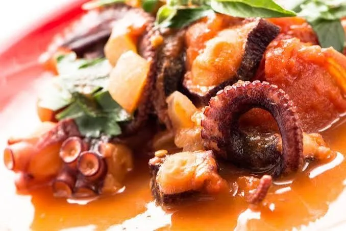
🧺Les ingrédients
- 1 kgde seiches nettoyées
- 1oignon
- 140 gde concentré de tomate
- 20 clde vin blanc sec
- 1 zested'écorce d'orange séchée
- QSde pommes de terre
- QSde sel et de poivre
- 3 goussesd'ail
- 2jaunes d'œufs
- QSd'huile d'olive
👩🍳La préparation
- Dégorger la seiche : coupez la seiche en morceaux et faites-la revenir à sec dans une cocotte : elle va rendre son eau. Laissez évaporer, puis faites-la dorer avec un filet d'huile.
- Faire suer les aromates : ajoutez l'oignon émincé et une partie de l'ail haché, faites revenir, puis incorporez le concentré de tomate et déglacez au vin blanc.
- Mijoter : mouillez à hauteur avec de l'eau, ajoutez le zeste d'orange, salez, poivrez et laissez mijoter à feu doux environ 45 minutes, jusqu'à ce que la seiche soit tendre.
- Cuire les pommes de terre : ajoutez les pommes de terre coupées en morceaux 20 minutes avant la fin de la cuisson, ou faites-les cuire à part à l'eau.
- Monter l'aïoli : pendant la cuisson, montez l'ail écrasé et les jaunes d'œufs à l'huile d'olive versée en filet.
- Lier et servir : hors du feu, une fois la sauce tiédie, incorporez l'aïoli en remuant délicatement pour lier sans faire « brousser » la sauce. Servez aussitôt, bien chaud.
🍷Les vins d'accompagnement
Picpoul de Pinet
AOP Languedoc Picpoul de Pinet · Hérault (34)
Languedoc blanc
AOP Languedoc · Hérault (34)
Rosé de Thau
IGP Pays d’Oc · Hérault (34)
La saucisse de Toulouse
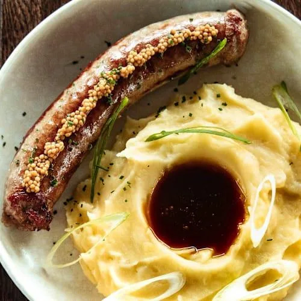
🧺Les ingrédients
- 800 gde saucisse de Toulouse en brasse
- 1 c. à s.d'huile ou de graisse de canard
- 1 kgde pommes de terre à chair ferme
- 2 c. à s.de graisse de canard
- 2gousses d'ail
- ½ bouquetde persil plat
- sel, poivre
👩🍳La préparation
- Les pommes de terre : épluchez les pommes de terre, coupez-les en rondelles épaisses, rincez-les et séchez-les dans un torchon.
- Sauter : faites-les cuire 25 minutes dans la graisse de canard, dans une grande poêle, à feu moyen, en les retournant souvent.
- Préparer la saucisse : enroulez la saucisse en spirale et maintenez-la avec deux brochettes en croix. Ne la piquez pas : elle garderait moins son jus.
- Griller : faites-la cuire au barbecue, sur des braises moyennes, ou à la poêle dans un filet d'huile, 10 à 12 minutes de chaque côté, à feu modéré pour qu'elle cuise à cœur sans éclater.
- Finir : en fin de cuisson des pommes de terre, ajoutez l'ail et le persil hachés, salez et poivrez.
- Servir : coupez la saucisse en tronçons et servez avec les pommes de terre et une moutarde.
🍷Les vins d'accompagnement
Fronton rouge
AOP Fronton · Haute-Garonne (31)
Fronton rosé
AOP Fronton · Haute-Garonne (31)
Gaillac rouge
AOP Gaillac · Tarn (81)
Saint-Mont rouge
AOP Saint-Mont · Gers (32)
La tielle sétoise
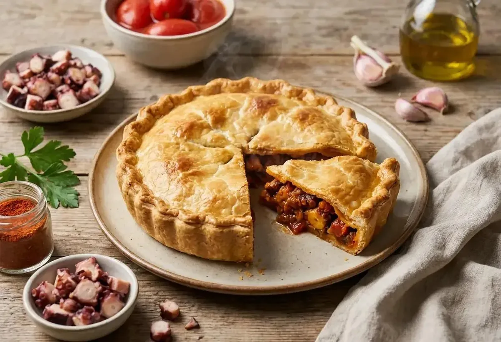
🧺Les ingrédients
- 500 gde farine
- 20 gde levure fraîche de boulanger
- 25 cld'eau tiède
- 5 cld'huile d'olive
- 10 gde sel
- 1jaune d'œuf pour dorer
- 1 c. à s.de concentré de tomate pour la dorure (facultatif)
- 1 kgde poulpe nettoyé
- 2oignons
- 3gousses d'ail
- 800 gde tomates concassées
- 2 c. à s.de concentré de tomate
- 10 clde vin blanc sec
- 1 pincéede piment de Cayenne
- 1 c. à c.de paprika
- ½ bouquetde persil
- 3 c. à s.d'huile d'olive
👩🍳La préparation
- Le poulpe : plongez le poulpe dans l'eau bouillante 2 minutes, puis coupez-le en petits morceaux.
- La sauce : faites revenir les oignons et l'ail hachés dans l'huile, ajoutez le poulpe, le vin blanc, les tomates, le concentré, le piment et le paprika. Couvrez et laissez mijoter 1 h 30 à feu doux, jusqu'à ce que le poulpe soit tendre et la sauce épaisse. Ajoutez le persil et laissez refroidir.
- La pâte : délayez la levure dans l'eau tiède, ajoutez la farine, l'huile et le sel, pétrissez 10 minutes et laissez lever 1 heure.
- Foncer : préchauffez le four à 180 °C. Étalez les deux tiers de la pâte et garnissez un moule huilé de 26 cm, en laissant dépasser les bords.
- Garnir : versez la garniture froide. Couvrez avec le reste de la pâte, rabattez les bords et pincez-les à la main pour former le bord cannelé typique.
- Cuire : dorez au jaune d'œuf (mêlé d'un peu de concentré de tomate pour la couleur traditionnelle), piquez le dessus et enfournez 40 minutes.
🍷Les vins d'accompagnement
Picpoul de Pinet
AOP · Hérault (34)
Languedoc rosé
AOP Languedoc · Hérault (34)
Languedoc blanc (Grés de Montpellier)
AOP Languedoc · Hérault (34)
Faugères rouge
AOP Faugères · Hérault (34)
Les tripoux de Naucelle
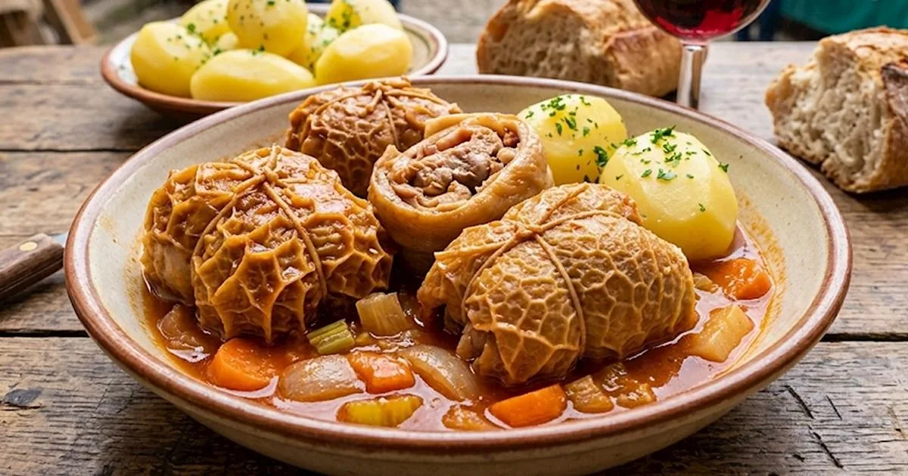
🧺Les ingrédients
- 12tripoux prêts à cuire
- 25 clde vin blanc sec
- QSd'eau
- 3carottes
- 2oignons cloutés
- 1bouquet garni
- 4 goussesd'ail
- QSde sel et de poivre en grains
👩🍳La préparation
- Préparer le fond : disposez au fond d'une cocotte les carottes en rondelles, les oignons cloutés et le bouquet garni.
- Installer les tripoux : rangez les tripoux serrés les uns contre les autres sur le lit de légumes, pour qu'ils ne se défassent pas à la cuisson.
- Mouiller : couvrez à hauteur d'eau et de vin blanc, ajoutez l'ail en chemise, salez et poivrez.
- Mijoter à feu très doux : laissez frémir à couvert plusieurs heures, sans jamais bouillir fort, jusqu'à ce que les tripoux soient fondants.
- Servir : servez bien chaud dans le bouillon réduit, avec des pommes de terre vapeur ou un aligot.
🍷Les vins d'accompagnement
Marcillac rouge
AOP Marcillac · Aveyron (12)
Pommes de terre vapeur
Ou un aligot de l’Aubrac
Côtes de Millau rouge
AOP Côtes de Millau · Aveyron (12)
Recettes sucrées
Deuxième partie
Fouaces, croustades, millas, crème catalane, oreillettes… Des gâteaux de fête et des douceurs de tous les jours, souvent nés des fours de village, des confréries et des grandes fêtes religieuses.
24 recettes
Le bras de Vénus

🧺Les ingrédients
- 4œufs (blancs et jaunes séparés)
- 125 gde sucre en poudre
- 125 gde farine
- 1citron bio (le zeste, facultatif)
- 1 pincéede sel
- 50 clde lait entier
- 4jaunes d'œufs
- 125 gde sucre en poudre
- 60 gde farine
- 1gousse de vanille
- 1 c. à s.de rhum (facultatif)
- 20 cld'eau
- 60 gde sucre
- 2 c. à s.de sucre glace
👩🍳La préparation
- La crème : faites infuser la gousse de vanille fendue dans le lait chaud 10 minutes. Fouettez les jaunes avec le sucre, ajoutez la farine, puis versez le lait peu à peu. Remettez sur feu doux et remuez jusqu'à épaississement. Hors du feu, ajoutez le rhum, filmez au contact et laissez refroidir.
- Les jaunes : préchauffez le four à 200 °C. Fouettez les jaunes avec 100 g de sucre et le zeste jusqu'à ce que le mélange blanchisse et triple de volume, puis incorporez délicatement la farine.
- Les blancs : montez les blancs en neige ferme avec le sel et les 25 g de sucre restants, puis incorporez-les en trois fois.
- Cuire : étalez la pâte sur une plaque de 22 x 31 cm couverte de papier sulfurisé, et enfournez 8 à 10 minutes : la génoise doit être dorée et souple.
- Le sirop : faites chauffer l'eau et le sucre jusqu'à dissolution.
- Rouler : retournez la génoise chaude sur un torchon humide, retirez le papier et imbibez-la de sirop tiède. Étalez la crème en laissant 1 cm sur les bords, puis roulez en serrant, en vous aidant du torchon.
- Reposer : laissez au moins 1 heure au réfrigérateur. Saupoudrez de sucre glace avant de servir, et marquez des croisillons au fer chaud si vous en avez un.
🍷Les vins d'accompagnement
Muscat de Rivesaltes
AOP · Pyrénées-Orientales (66)
Rivesaltes ambré
AOP · Pyrénées-Orientales (66)
Crémant de Limoux
AOP · Aude (11)
Cava semi-seco
DO Cava · Catalogne (Espagne)
Les bunyetes catalanes

🧺Les ingrédients
- 500 gde farine
- 3gros œufs
- 15 gde levain (ou 10 g de levure fraîche)
- 75 gde beurre fondu tiède
- 5 gde sel
- 5 cld'eau de fleur d'oranger
- 1 ou 2citrons bio (les zestes)
- 1 ld'huile de friture
- 250 gde sucre en poudre
👩🍳La préparation
- Le levain : délayez le levain ou la levure dans le beurre fondu tiède.
- Les œufs : battez les œufs avec l'eau de fleur d'oranger et les zestes de citron.
- Pétrir : mélangez la farine et le sel, ajoutez les œufs et le beurre au levain, puis pétrissez longuement (20 minutes au robot, 40 à la main) jusqu'à obtenir une pâte lisse et élastique.
- Reposer : couvrez d'un linge et laissez reposer 2 à 3 heures à température ambiante.
- Diviser : aplatissez la pâte et découpez des morceaux avec le bord d'un verre, ou formez des boules de la taille d'une noix.
- Étirer : aplatissez chaque boule avec la paume, puis étirez-la avec les pouces sur un linge posé sur votre genou, jusqu'à obtenir un disque très fin. Un rouleau à pâtisserie peut aider.
- Frire : faites chauffer l'huile dans une grande sauteuse (remplie au tiers). Plongez les disques un par un et faites-les dorer des deux côtés.
- Sucrer : égouttez sur du papier absorbant et saupoudrez de sucre aussitôt, tant qu'ils sont chauds.
🍷Les vins d'accompagnement
Blanquette de Limoux, méthode ancestrale
AOP · Aude (11)
Muscat de Rivesaltes
AOP · Pyrénées-Orientales (66)
Rivesaltes ambré
AOP · Pyrénées-Orientales (66)
Muscat de Lunel
AOP · Hérault (34)
La coupétade lozérienne

🧺Les ingrédients
- 400 gde pain rassis (une miche)
- 1 lde lait entier
- 6œufs
- 240 gde sucre en poudre + 20 g pour finir
- 1 sachetde sucre vanillé
- 500 gde pruneaux dénoyautés
- 250 gde raisins secs
- 1 noixde beurre pour le plat
👩🍳La préparation
- Préchauffer : allumez le four à 120-130 °C et beurrez un plat creux en terre cuite, rectangulaire ou ovale.
- Le pain : coupez le pain rassis en morceaux moyens et disposez-les dans le plat. Ajoutez les pruneaux et les raisins secs en les répartissant entre les morceaux.
- La crème : faites tiédir le lait. Battez les œufs avec 240 g de sucre et le sucre vanillé, puis versez le lait tiède en fouettant.
- Imbiber : versez la crème sur le pain. Appuyez avec une fourchette pour que le pain s'imbibe bien, et laissez reposer 10 minutes.
- Cuire : enfournez 1 heure à 120-130 °C : la cuisson lente donne une texture fondante, comme un flan.
- Finir : à la sortie du four, saupoudrez des 20 g de sucre restants. Servez tiède ou froid, nature, avec un caramel ou de la crème fouettée.
🍷Les vins d'accompagnement
Maury grenat
AOP Maury · Pyrénées-Orientales (66)
Banyuls rimage
AOP Banyuls · Pyrénées-Orientales (66)
Rivesaltes tuilé
AOP Rivesaltes · Pyrénées-Orientales (66)
Gaillac doux
AOP Gaillac · Tarn (81)
Les croquants de Cordes

🧺Les ingrédients
- 125 gd'amandes entières, concassées grossièrement
- 230 gde sucre en poudre
- 70 gde blancs d'œufs (environ 2), à température ambiante
- 50 gde farine
👩🍳La préparation
- Préchauffer : allumez le four à 170 °C (chaleur tournante) et couvrez une plaque d'une feuille de cuisson en silicone ou de papier sulfurisé.
- Concasser : concassez grossièrement les amandes au couteau : il doit rester de beaux morceaux.
- Mélanger : dans un saladier, mélangez le sucre, la farine et les amandes, puis ajoutez les blancs d'œufs non battus. Mélangez jusqu'à obtenir une pâte collante et homogène.
- Façonner : déposez de petits tas de 15 g environ, bien espacés, et étirez-les du bout d'une cuillère humide en bandes allongées et fines : ils s'étalent à la cuisson.
- Cuire : enfournez environ 15 minutes, jusqu'à ce que les croquants soient dorés et caramélisés sur les bords.
- Refroidir : laissez refroidir complètement sur la plaque avant de les décoller : chauds, ils sont mous ; froids, ils deviennent cassants.
🍷Les vins d'accompagnement
Gaillac doux
AOP Gaillac · Tarn (81)
Gaillac vin de voile
AOP Gaillac · Tarn (81)
Gaillac, méthode ancestrale
AOP Gaillac · Tarn (81)
Muscat de Frontignan
AOP · Hérault (34)
La croustade aux pommes

🧺Les ingrédients
- 250 gde farine
- 2œufs
- 1 pincéede sel
- 1 filetd'eau tiède
- QSd'huile pour badigeonner la boule
- 6pommes
- 120 gde sucre
- 2 c. à s.d'armagnac
- 100 gde beurre fondu
- QSde sucre glace pour le décor
👩🍳La préparation
- Préparer la pâte : mélangez la farine, le sel, les œufs et un filet d'eau tiède. Pétrissez jusqu'à obtenir une pâte souple et élastique.
- Laisser reposer : formez une boule, badigeonnez-la d'huile et laissez-la reposer sous un linge pendant 30 minutes.
- Préparer les pommes : épluchez et émincez les pommes. Faites-les revenir doucement dans un peu de beurre avec le sucre et l'armagnac, jusqu'à ce qu'elles soient tendres.
- Étirer la pâte : sur une nappe farinée, étirez la pâte à la main en une feuille la plus fine possible, sans la déchirer. Découpez-la en grandes feuilles.
- Monter la croustade : badigeonnez chaque feuille de beurre fondu et superposez-les dans le moule en les froissant légèrement, en répartissant les pommes entre les couches.
- Cuire et servir : enfournez à 180 °C pendant 30 à 35 minutes, jusqu'à une belle coloration dorée. Saupoudrez généreusement de sucre glace et servez tiède.
🍷Les vins d'accompagnement
Gaillac moelleux
AOP Gaillac · Tarn (81)
Cidre fermier
Cidre brut ou demi-sec
Café ou vin chaud
Boisson chaude
La crème catalane

🧺Les ingrédients
- 1 lde lait entier
- 8jaunes d'œufs
- 200 gde sucre en poudre
- 40 gde fécule de maïs
- 1citron bio (le zeste)
- 1bâton de cannelle
- 6 c. à s.de sucre en poudre
- 1fer à caraméliser ou un chalumeau
👩🍳La préparation
- Infuser : portez le lait à frémissement avec le zeste de citron prélevé en ruban et le bâton de cannelle. Couvrez et laissez infuser 15 minutes hors du feu, puis retirez zeste et cannelle.
- Mélanger : fouettez les jaunes avec le sucre jusqu'à ce que le mélange blanchisse, puis ajoutez la fécule.
- Lier : versez le lait chaud petit à petit sur les jaunes en fouettant.
- Cuire : remettez sur feu doux et remuez sans cesse à la cuillère en bois jusqu'à ce que la crème épaississe et nappe la cuillère. Ne la laissez pas bouillir longtemps.
- Répartir : versez la crème dans des cassolettes plates en terre cuite. Laissez refroidir, puis réservez au moins 3 heures au réfrigérateur.
- Caraméliser : au moment de servir, saupoudrez chaque crème d'une fine couche de sucre et caramélisez-la au fer chaud ou au chalumeau. Servez aussitôt, tant que le caramel craque.
🍷Les vins d'accompagnement
Rivesaltes ambré
AOP Rivesaltes · Pyrénées-Orientales (66)
Muscat de Rivesaltes
AOP · Pyrénées-Orientales (66)
Banyuls ambré
AOP Banyuls · Pyrénées-Orientales (66)
Muscat de Saint-Jean-de-Minervois
AOP · Hérault (34)
Les escalettes languedociennes

🧺Les ingrédients
- 250 gde farine
- 125 gde sucre en poudre
- 2œufs
- 80 gde beurre fondu (ou d'huile d'olive douce)
- 1citron bio (le zeste)
- 1 c. à s.d'eau de fleur d'oranger ou ½ c. à c. d'anis
- 1 pincéede sel
- 1fer à gaufrettes fines (ou à bricelets)
- 1pinceau et un peu d'huile
👩🍳La préparation
- La pâte : fouettez les œufs avec le sucre et le sel, ajoutez le beurre fondu tiède, le zeste et la fleur d'oranger, puis la farine. Mélangez jusqu'à obtenir une pâte souple qui ne colle pas aux doigts.
- Reposer : filmez et laissez reposer 1 à 2 heures à température ambiante.
- Façonner : divisez la pâte en petites boules de la taille d'une noix, roulées en boudins courts.
- Chauffer le fer : faites chauffer le fer des deux côtés, sur le gaz ou à l'électricité, et huilez-le légèrement au pinceau pour la première fournée.
- Cuire : posez une boule au centre, refermez en serrant et retournez le fer toutes les 30 secondes environ : l'escalette est prête quand elle est blonde et dorée, en une minute à peine.
- Refroidir : décollez-la à la pointe d'un couteau et laissez-la refroidir à plat sur une grille : elle durcit et devient croustillante en quelques secondes.
🍷Les vins d'accompagnement
Cartagène du Languedoc
Vin de liqueur traditionnel · Hérault (34)
Muscat de Mireval
AOP · Hérault (34)
Languedoc blanc
AOP Languedoc · Hérault (34)
Blanquette de Limoux
AOP · Aude (11)
La flaune aveyronnaise

🧺Les ingrédients
- 250 gde farine
- 125 gde beurre froid en dés
- 1jaune d'œuf
- 5 cld'eau froide
- 1 c. à s.d'eau de fleur d'oranger
- 1 pincéede sel
- 500 gde recuite de brebis (ou de brousse)
- 3œufs
- 150 gde sucre en poudre
- 1 c. à s.de farine
- 2 c. à s.d'eau de fleur d'oranger
- 1 pincéede sel
- 1 c. à s.de sucre glace
👩🍳La préparation
- La pâte : sablez la farine, le sel et le beurre du bout des doigts. Ajoutez le jaune, la fleur d'oranger et l'eau, et formez une boule sans trop travailler. Filmez et laissez reposer 30 minutes au frais.
- Foncer : préchauffez le four à 180 °C. Étalez la pâte et garnissez un moule à tarte de 24 à 26 cm. Piquez le fond à la fourchette.
- Égoutter la recuite : si la recuite est très humide, laissez-la égoutter quelques minutes dans une passoire fine.
- La garniture : écrasez la recuite à la fourchette, puis mélangez-la avec les œufs, le sucre, la farine, la fleur d'oranger et le sel, jusqu'à obtenir une crème lisse.
- Cuire : versez la garniture sur la pâte et enfournez environ 45 minutes, jusqu'à ce que le dessus soit gonflé et bien doré.
- Servir : laissez tiédir, saupoudrez de sucre glace. La flaune se mange tiède ou froide.
🍷Les vins d'accompagnement
Gaillac doux
AOP Gaillac · Tarn (81)
Côtes de Millau rosé
AOP Côtes de Millau · Aveyron (12)
Muscat de Saint-Jean-de-Minervois
AOP · Hérault (34)
Jurançon moelleux
AOP · Pyrénées-Atlantiques (64)
La fouace aveyronnaise

🧺Les ingrédients
- 500 gde farine de gruau (ou T45)
- 15 gde levure fraîche de boulanger
- 150 gde sucre en poudre
- 5 gde sel
- 200 mlde lait entier
- 3œufs
- 125 gde beurre en dés
- 3 c. à s.d'eau de fleur d'oranger
- 1zeste d'orange (facultatif)
- 1œuf pour la dorure
- 2 c. à s.d'eau tiède ou de sirop léger
- 2 c. à s.de sucre en poudre
👩🍳La préparation
- Pétrir : émiettez la levure dans le bol, ajoutez la farine, le sucre, le sel, le lait tiède, les œufs battus et la fleur d'oranger. Pétrissez 8 à 10 minutes, jusqu'à ce que la pâte soit souple.
- Le beurre : incorporez le beurre en dés et le zeste, puis pétrissez encore jusqu'à ce que la pâte se décolle des parois.
- Première pousse : couvrez d'un torchon et laissez lever à température ambiante une demi-journée ou toute une nuit : la pâte doit tripler de volume.
- Repos au froid : dégazez la pâte, aplatissez-la, filmez-la et placez-la une nuit au réfrigérateur. Elle sera plus facile à façonner.
- Façonner : formez une boule, percez le centre avec les doigts et étirez-la en couronne. Laissez lever environ 1 heure sur la plaque.
- Dorer et cuire : badigeonnez d'œuf battu avec une pincée de sel. Entaillez le bord intérieur aux ciseaux si vous le souhaitez, puis enfournez environ 30 minutes à 160 °C (chaleur tournante).
- Finir : à la sortie du four, passez un peu d'eau tiède ou de sirop au pinceau et saupoudrez de sucre.
🍷Les vins d'accompagnement
Gaillac, méthode ancestrale
AOP Gaillac · Tarn (81)
Blanquette de Limoux, méthode ancestrale
AOP · Aude (11)
Muscat de Frontignan
AOP · Hérault (34)
Gaillac doux
AOP Gaillac · Tarn (81)
La fouace tarnaise

🧺Les ingrédients
- 900 gde farine
- 20 gde levure de boulanger
- 25 clde lait de brebis (ou de vache)
- 200 gde beurre
- 150 gde sucre
- 6œufs
- 1 pincéede sel
- 2citrons (le zeste)
- 3 c. à s.d'eau de fleur d'oranger
- 150 gde fruits confits
- 1œuf battu pour dorer
- QSde sucre pour le dessus
👩🍳La préparation
- Préparer le levain : délayez la levure dans le lait tiède, mélangez avec un peu de farine et laissez lever jusqu'à ce que le levain double de volume.
- Former la pâte : disposez le reste de farine en fontaine. Ajoutez le sel, le sucre, la fleur d'oranger, les zestes de citron et trois œufs, puis mélangez avec la moitié du beurre.
- Incorporer le levain : ajoutez le levain à la pâte, puis les œufs restants un à un, enfin les fruits confits et le reste du beurre. Pétrissez à la main jusqu'à obtenir une pâte souple et ferme.
- Façonner : formez une boule et incisez le dessus en croix, puis façonnez en couronne ou en tresse sur une plaque beurrée.
- Laisser lever : laissez pousser la pâte 3 heures, badigeonnez-la d'œuf battu, puis laissez-la reposer encore 1 à 2 heures.
- Cuire : saupoudrez de sucre et enfournez à four chaud (thermostat 7-8, soit 210 à 240 °C) pendant environ 35 minutes, jusqu'à ce que la fouace soit bien dorée.
🍷Les vins d'accompagnement
Confiture de châtaignes
Monts de Lacaune · Tarn (81)
Café au lait
Boisson chaude
Gaillac doux
AOP Gaillac · Tarn (81)
La fougasse d'Aigues-Mortes

🧺Les ingrédients
- 500 gde farine
- 60 gde sucre en poudre
- 4œufs
- 100 gde beurre demi-sel mou
- 20 gde levure fraîche de boulanger
- ½ verrede lait tiède
- 20 clde crème fraîche liquide
- 5 c. à s.d'eau de fleur d'oranger
- 40 gde beurre fondu
- 50 gde sucre en poudre
- 1 traitd'eau de fleur d'oranger
👩🍳La préparation
- Activer la levure : émiettez la levure dans le lait tiède et laissez reposer 15 minutes.
- Mélanger : battez les œufs avec la crème et l'eau de fleur d'oranger.
- Pétrir : ajoutez la levure, le beurre mou, le sucre et la farine. Pétrissez jusqu'à obtenir une pâte lisse et homogène (un robot aide beaucoup).
- Pousse au froid : couvrez et laissez reposer une nuit au réfrigérateur : la pâte doit tripler de volume.
- Étaler : le lendemain, pétrissez légèrement, laissez reposer 30 minutes à température ambiante, puis étalez la pâte sur une plaque couverte de papier sulfurisé, sur 2 cm environ.
- Le dessus : vaporisez un peu d'eau de fleur d'oranger, badigeonnez de beurre fondu et couvrez généreusement de sucre.
- Cuire : enfournez 20 minutes à 180 °C. Cinq minutes avant la fin, repassez du beurre et du sucre pour obtenir la croûte caramélisée.
🍷Les vins d'accompagnement
Muscat de Lunel
AOP · Hérault (34)
Sable de Camargue gris
IGP Sable de Camargue · Gard (30)
Clairette de Bellegarde
AOP · Gard (30)
Muscat de Mireval
AOP · Hérault (34)
Le fénétra toulousain

🧺Les ingrédients
- 250 gde farine
- 125 gde beurre à température ambiante
- 125 gde sucre en poudre
- 1œuf
- 1gousse de vanille
- 1 pincéede sel
- 350 gde confiture d'abricots (1 pot)
- 1citron confit (ou écorces de citron confites)
- 4blancs d'œufs
- 100 gde sucre en poudre + 25 g pour finir
- 125 gde poudre d'amandes
- 50 gde farine
- 1 c. à c.d'extrait d'amande amère
👩🍳La préparation
- Sabler la pâte : dans un saladier, mélangez la farine, le sucre, le sel et les graines de la gousse de vanille. Ajoutez le beurre en dés et frottez entre vos doigts jusqu'à obtenir un sable.
- Lier et reposer : ajoutez l'œuf, mélangez juste ce qu'il faut pour former une boule homogène. Filmez-la et laissez reposer 1 heure au réfrigérateur.
- Préchauffer : pendant le repos, allumez le four à 180 °C.
- Foncer le moule : étalez la pâte, garnissez un moule à tarte (ovale si vous en avez un, comme le veut la tradition) et piquez le fond à la fourchette.
- L'abricot et le citron : étalez la confiture d'abricots sur le fond, puis parsemez de citron confit haché finement.
- Monter les blancs : battez les blancs en neige et ajoutez les 100 g de sucre peu à peu, comme pour une meringue, jusqu'à ce qu'ils soient fermes et brillants.
- Les amandes : incorporez délicatement à la spatule la farine tamisée, la poudre d'amandes et l'extrait d'amande amère, sans casser les blancs.
- Cuire : versez cet appareil sur la confiture, lissez et enfournez 30 minutes à 180 °C, jusqu'à ce que le dessus soit bien doré.
- Finir : à la sortie du four, saupoudrez des 25 g de sucre restants (ou de sucre glace). Laissez refroidir complètement avant de découper.
🍷Les vins d'accompagnement
Gaillac doux
AOP Gaillac · Tarn (81)
Muscat de Rivesaltes
AOP · Pyrénées-Orientales (66)
Pacherenc du Vic-Bilh moelleux
AOP · Gers (32), Hautes-Pyrénées (65)
Blanquette de Limoux, méthode ancestrale
AOP · Aude (11)
Le gâteau à la broche

🧺Les ingrédients
- 500 gde farine
- 500 gde sucre en poudre
- 500 gde beurre fondu
- 12œufs
- 1 sachetde sucre vanillé
- 3 c. à s.de rhum ou d'eau de fleur d'oranger
- 1 pincéede sel
- 1broche conique en bois
- 1feuille de papier sulfurisé
- 1feu de bois vif ou une rôtissoire
- 1louche
- 1lèchefrite pour recueillir la pâte
👩🍳La préparation
- Préparer la broche : entourez le cône de bois de papier sulfurisé bien serré et beurrez-le. Allumez le feu à l'avance pour obtenir une chaleur vive et régulière.
- La pâte : fouettez le sucre et les œufs jusqu'à ce que le mélange blanchisse. Ajoutez le beurre fondu tiède, le sucre vanillé, le sel et le rhum ou la fleur d'oranger, puis la farine en pluie. La pâte doit être lisse et nappante, comme une pâte à crêpes épaisse.
- La première couche : placez la broche devant le feu et faites-la tourner sans arrêt. Versez une louche de pâte sur toute la longueur et laissez dorer.
- Couche après couche : dès qu'une couche est dorée, versez la suivante. La pâte qui coule forme des pointes : c'est la signature du gâteau. Récupérez le surplus dans la lèchefrite pour le reverser.
- Surveiller : comptez 2 à 3 heures pour cette quantité. Tournez régulièrement et reculez la broche si le gâteau colore trop vite.
- Refroidir : quand la pâte est épuisée, laissez refroidir complètement le gâteau sur sa broche.
- Démouler : retirez délicatement la broche, puis le papier. Le gâteau se tranche horizontalement pour montrer ses cernes.
🍷Les vins d'accompagnement
Jurançon moelleux
AOP Jurançon · Pyrénées-Atlantiques (64)
Pacherenc du Vic-Bilh moelleux
AOP · Hautes-Pyrénées (65), Gers (32)
Gaillac doux
AOP Gaillac · Tarn (81)
Blanquette de Limoux, méthode ancestrale
AOP · Aude (11)
Le mesturet tarnais

🧺Les ingrédients
- 800 gde potiron (chair en dés)
- 250 gde farine de maïs fine
- 250 gde sucre roux (cassonade)
- 4œufs
- 1citron bio (le zeste)
- 1orange bio (le zeste)
- 1 c. à s.de rhum
- QSde beurre pour le moule et le dessus
👩🍳La préparation
- Cuire le potiron : faites cuire les dés de potiron à la vapeur jusqu'à ce qu'ils soient bien tendres. Égouttez-les soigneusement et laissez tiédir.
- Mélanger : dans un saladier, écrasez le potiron à la fourchette, puis ajoutez la farine de maïs, le sucre roux, les œufs battus, les zestes de citron et d'orange et le rhum. Mélangez jusqu'à obtenir une pâte homogène.
- Mouler : beurrez généreusement un moule rectangulaire à bords hauts et versez-y la pâte. Lissez le dessus.
- Première cuisson : enfournez à 130 °C pendant 45 minutes.
- Beurrer et finir : sortez le moule, badigeonnez généreusement le dessus de beurre fondu, puis remettez au four 45 minutes, toujours à 130 °C.
- Refroidir et servir : laissez refroidir complètement avant de démouler. Servez froid, coupé en parts ou en carrés.
🍷Les vins d'accompagnement
Gaillac doux
AOP Gaillac · Tarn (81)
Gaillac méthode ancestrale
AOP Gaillac · Tarn (81)
Café ou thé noir
Boisson chaude
Le millas sucré

🧺Les ingrédients
- 200 gde farine de maïs fine
- 150 gde farine de blé
- 75 clde lait entier (cru si possible)
- 75 cld'eau
- 60 gde beurre
- 60 gde sucre en poudre
- 8 cld'eau de fleur d'oranger
- ½ c. à c.de sel
- 2œufs (facultatif, pour une texture plus riche)
- 40 gde beurre pour la poêle
- 100 gde sucre en poudre (ou du miel)
👩🍳La préparation
- Chauffer : dans une grande cocotte, portez à ébullition le lait, l'eau et le sel.
- Les farines : versez les farines en pluie en fouettant vigoureusement pour éviter les grumeaux.
- Parfumer : ajoutez le beurre par morceaux, le sucre et l'eau de fleur d'oranger. Si vous ajoutez des œufs, battez-les et incorporez-les hors du feu, puis remettez à cuire.
- Cuire : laissez cuire au moins 1 heure à feu doux en remuant souvent à la cuillère en bois. Le millas est prêt quand il est très épais et qu'une cuillère y tient debout.
- Laisser prendre : versez dans des assiettes creuses ou un plat huilé, sur 2 à 3 cm d'épaisseur. Laissez refroidir, puis une nuit au frais.
- Découper et dorer : démoulez, coupez en carrés ou en tranches et faites-les dorer des deux côtés à la poêle dans un peu de beurre.
- Sucrer : roulez les carrés encore chauds dans le sucre, ou arrosez-les de miel.
🍷Les vins d'accompagnement
Gaillac doux
AOP Gaillac · Tarn (81)
Blanquette de Limoux, méthode ancestrale
AOP · Aude (11)
Côtes de Gascogne moelleux
IGP · Gers (32)
Muscat de Frontignan
AOP · Hérault (34)
Les oreillettes languedociennes

🧺Les ingrédients
- 500 gde farine
- 4œufs
- 40 gde beurre fondu
- 25 gde levure de boulanger
- 4 c. à s.de lait tiède
- 4 c. à c.de rhum
- 2 c. à s.d'eau de fleur d'oranger
- 1 c. à s.de zeste de citron bio râpé
- 1 pincéede sel
- 1 ld'huile de friture
- 100 gde sucre glace
👩🍳La préparation
- La levure : délayez la levure dans un peu d'eau tiède.
- Le puits : versez la farine dans un grand saladier et creusez un puits. Ajoutez le beurre fondu et la levure, puis mélangez.
- La pâte : incorporez peu à peu les œufs, le lait, le rhum, la fleur d'oranger, le zeste et le sel. Travaillez à la cuillère en bois, puis à la main, jusqu'à obtenir une pâte souple.
- Reposer : couvrez et laissez reposer 6 heures dans un endroit tiède.
- Étaler : prélevez des boules de pâte et étalez-les au rouleau le plus finement possible, en disques d'environ 25 cm. Coupez-les en rectangles ou en losanges, et entaillez le centre d'une ou deux fentes.
- Frire : faites chauffer l'huile dans une grande poêle. Plongez les oreillettes une à une : elles gonflent et dorent en une minute de chaque côté.
- Sucrer : égouttez-les sur du papier absorbant, empilez-les et poudrez-les généreusement de sucre glace.
🍷Les vins d'accompagnement
Blanquette de Limoux
AOP · Aude (11)
Picpoul de Pinet
AOP · Hérault (34)
Muscat de Lunel
AOP · Hérault (34)
Muscat de Frontignan
AOP · Hérault (34)
Le pastis gascon

🧺Les ingrédients
- 500 gde farine
- 1œuf
- 20 cld'eau
- 1 c. à s.d'huile de tournesol, plus 15 cl pour le repos
- 1 pincéede sel
- 100 gde beurre fondu
- 90 gde sucre en poudre
- 3pommes (golden ou reinettes)
- 7 cld'armagnac
- 30 gde sucre en poudre
- 1sachet de sucre vanillé (facultatif)
👩🍳La préparation
- La veille, la pâte : mélangez l'œuf, l'eau, le sel et 1 c. à s. d'huile. Ajoutez la farine peu à peu jusqu'à obtenir une pâte souple et élastique, proche d'une pâte à pain.
- Le repos : placez la pâte dans un sac de congélation avec environ 15 cl d'huile, fermez et laissez reposer une nuit.
- Les pommes : coupez les pommes en fines lamelles et laissez-les macérer une nuit dans l'armagnac avec le sucre.
- Étirer : le lendemain, couvrez une grande table d'un drap fariné. Étirez délicatement la pâte du bout des doigts, par-dessous, jusqu'à pouvoir voir vos mains à travers.
- Sécher : laissez la pâte sécher 30 à 60 minutes à l'air libre. Préchauffez le four à 200 °C.
- Monter : badigeonnez la pâte de beurre fondu et saupoudrez de sucre. Découpez des disques plus grands que le moule beurré et superposez-en plusieurs.
- Garnir : répartissez les pommes égouttées, saupoudrez d'un peu de sucre, puis couvrez avec les morceaux de pâte restants, froissés en « fleurs » pour le volume.
- Cuire : enfournez 25 à 30 minutes à 200 °C, jusqu'à ce que le dessus soit doré et croustillant. À la sortie, arrosez d'un peu de beurre fondu et du jus de macération à l'armagnac, puis repassez 2 minutes au four.
🍷Les vins d'accompagnement
Pacherenc du Vic-Bilh moelleux
AOP · Gers (32), Hautes-Pyrénées (65)
Floc de Gascogne blanc
AOP · Gers (32)
Côtes de Gascogne moelleux
IGP · Gers (32)
Jurançon moelleux
AOP · Pyrénées-Atlantiques (64)
Le poumpet du Tarn

🧺Les ingrédients
- 500 gde farine T55
- 25 cld'eau froide
- 10 gde sel
- 1citron bio (le zeste)
- 350 gde beurre froid
- 2citrons bio
- 100 gde sucre en poudre
- 50 gde beurre fondu
- quelques gouttesd'extrait de bergamote (facultatif)
- 1 c. à s.de sucre glace pour finir
👩🍳La préparation
- Confire les zestes : prélevez les zestes des 2 citrons et taillez-les en très petits dés. Blanchissez-les trois fois 1 minute à l'eau bouillante, puis faites-les mijoter à couvert d'eau avec 20 g de sucre jusqu'à évaporation.
- Le mélange au citron : hors du feu, ajoutez aux zestes 20 g de beurre fondu, le jus d'un citron et la bergamote. Réservez le reste du beurre fondu.
- La détrempe : mélangez la farine, l'eau, le sel et le zeste râpé du troisième citron. Formez une boule et laissez reposer 30 minutes au frais.
- Tourer : aplatissez le beurre froid entre deux feuilles de papier. Étalez la pâte en rectangle, posez le beurre au centre, refermez, puis étalez et pliez en trois à trois reprises, avec 15 minutes de repos au frais entre chaque tour.
- Monter le gâteau : préchauffez le four à 220 °C. Étalez finement la pâte en grand rectangle et divisez-le mentalement en trois. Étalez les zestes confits sur le tiers central et saupoudrez de sucre.
- Plier : rabattez le tiers droit sur le centre, badigeonnez de beurre fondu sucré, puis rabattez le tiers gauche. Badigeonnez le dessus avec le reste du beurre et saupoudrez généreusement de sucre.
- Cuire : enfournez environ 20 minutes à 220 °C, en couvrant de papier aluminium si le dessus colore trop vite. Saupoudrez de sucre glace et servez froid ou à peine tiède.
🍷Les vins d'accompagnement
Muscat de Saint-Jean-de-Minervois
AOP · Hérault (34)
Gaillac doux
AOP Gaillac · Tarn (81)
Blanquette de Limoux, méthode ancestrale
AOP · Aude (11)
Muscat de Rivesaltes
AOP · Pyrénées-Orientales (66)
Les rousquilles catalanes

🧺Les ingrédients
- 400 gde farine
- 125 gde beurre mou
- 80 gde sucre en poudre
- 60 gde miel
- 2œufs
- 1citron bio (le zeste)
- 1 c. à c.de graines d'anis (facultatif)
- 8 gde levure chimique
- 1 pincéede sel
- 2blancs d'œufs
- 400 gde sucre glace
- ½citron (le jus et le zeste)
👩🍳La préparation
- La pâte : mélangez le sucre, le sel, le zeste de citron et l'anis. Ajoutez le beurre mou, les œufs et le miel, et fouettez.
- La farine : incorporez la farine et la levure, puis pétrissez juste assez pour obtenir une pâte homogène. Réservez 1 heure au réfrigérateur.
- Découper : étalez la pâte sur 1,5 à 2 cm d'épaisseur. Découpez des disques de 5 à 6 cm et évidez le centre avec un petit emporte-pièce (ou formez des anneaux avec des boudins de pâte).
- Cuire : enfournez sur une plaque couverte de papier sulfurisé, environ 20 minutes à 160 °C : les rousquilles doivent rester pâles. Laissez refroidir.
- Le glaçage : battez légèrement les blancs, puis ajoutez le sucre glace, le jus et le zeste de citron jusqu'à obtenir une glace épaisse et lisse.
- Glacer : trempez le dessus de chaque rousquille dans le glaçage, ou nappez-le à la cuillère en lissant jusqu'à recouvrir le trou.
- Sécher : laissez sécher au moins une nuit à l'air libre, jusqu'à ce que le glaçage soit bien dur.
🍷Les vins d'accompagnement
Muscat de Rivesaltes
AOP · Pyrénées-Orientales (66)
Banyuls rimage
AOP Banyuls · Pyrénées-Orientales (66)
Rivesaltes ambré
AOP · Pyrénées-Orientales (66)
Crémant de Limoux
AOP · Aude (11)
La tarte au melon du Quercy

🧺Les ingrédients
- 250 gde farine de blé
- 125 gde beurre doux froid
- 80 gde sucre glace
- 1œuf entier
- 50 clde lait entier
- 3jaunes d'œufs
- 70 gde sucre semoule
- 40 gde fécule de maïs
- 1 goussede vanille
- 1melon du Quercy IGP bien mûr (1 kg)
- 3 c. à s.de gelée d'abricot
- QSde feuilles de menthe fraîche
👩🍳La préparation
- Préparer la pâte : sablez la farine avec le beurre froid en dés, ajoutez le sucre glace puis l'œuf. Formez une boule sans trop travailler et réservez 30 minutes au frais.
- Cuire à blanc : étalez la pâte et foncez un moule de 26 cm. Piquez le fond, couvrez de papier et de légumes secs, puis enfournez 20 à 25 minutes à 180 °C jusqu'à ce que le fond soit bien doré. Laissez refroidir.
- Faire la crème : portez le lait à frémissement avec la vanille fendue. Fouettez les jaunes, le sucre et la fécule, versez le lait chaud, remettez sur le feu et faites épaissir 2 minutes en fouettant. Filmez au contact et laissez refroidir.
- Tailler le melon : ouvrez le melon, retirez les graines et l'écorce. Taillez de fines lamelles régulières, ou prélevez des billes à la cuillère parisienne.
- Garnir : lissez la crème froide sur le fond de tarte, puis disposez le melon en rosace en faisant se chevaucher les lamelles.
- Napper et servir : faites tiédir la gelée d'abricot et badigeonnez-en le melon au pinceau. Réservez 1 heure au frais et décorez de menthe au moment de servir.
🍷Les vins d'accompagnement
Floc de Gascogne blanc
AOP Floc de Gascogne · Gers (32)
Coteaux du Quercy rosé
AOP Coteaux du Quercy · Lot (46) et Tarn-et-Garonne (82)
Côtes de Gascogne moelleux
IGP Côtes de Gascogne · Gers (32)
La tarte aux noix du Quercy

🧺Les ingrédients
- 300 gde farine
- 50 gde sucre en poudre
- 150 gde beurre froid
- 1œuf
- 2 à 3 c. à s.d'eau froide
- 200 gde cerneaux de noix
- 300 gde sucre en poudre
- 15 cld'eau
- 15 clde crème liquide
- 100 gde beurre
- ou 2 c. à s.de miel à la place de 50 g de sucre
👩🍳La préparation
- La pâte : sablez la farine, le sucre et le beurre du bout des doigts. Ajoutez l'œuf et juste assez d'eau pour obtenir une pâte ferme. Filmez et laissez reposer 30 minutes au frais.
- Foncer : étalez la pâte et garnissez un moule à fond amovible de 24 cm, beurré. Remettez au frais pendant la préparation du caramel.
- Préchauffer : allumez le four à 220 °C.
- Le caramel : dans une casserole à fond épais, faites bouillir le sucre et l'eau une dizaine de minutes, sans trop remuer, jusqu'à obtenir un caramel doré foncé. Faites tiédir la crème à part.
- La garniture : hors du feu, laissez reposer le caramel 2 minutes, puis versez la crème chaude petit à petit en fouettant (attention aux projections). Ajoutez le beurre, le miel si vous en mettez, et les noix. Remuez une minute sur feu très doux.
- Cuire : versez sur la pâte et enfournez 20 minutes à 220 °C, puis 10 à 15 minutes à 150 °C, en surveillant que le dessus ne brunisse pas trop.
- Servir : laissez tiédir. La tarte se sert tiède ou à température ambiante, avec un peu de crème fraîche.
🍷Les vins d'accompagnement
Vin de noix du Quercy
Apéritif traditionnel · Lot (46)
Rivesaltes ambré
AOP · Pyrénées-Orientales (66)
Monbazillac
AOP · Dordogne (24)
Gaillac vin de voile
AOP Gaillac · Tarn (81)
La tourte des Pyrénées

🧺Les ingrédients
- 200 gde farine
- ½ sachetde levure chimique
- 120 gde beurre
- 100 gde sucre en poudre
- 3œufs
- 3 c. à s.de rhum
- 1 c. à c.d'extrait de vanille
- 1 pincéede sel
- 125 gde myrtilles des Pyrénées (facultatif)
- 1 c. à s.de sucre glace pour finir
👩🍳La préparation
- Séparer les œufs : séparez les blancs des jaunes. Mélangez les jaunes avec le sucre, la vanille et le rhum jusqu'à ce que le mélange blanchisse.
- Le beurre et la farine : faites fondre le beurre et ajoutez-le au mélange, puis incorporez la farine et la levure. Mélangez jusqu'à obtenir une pâte homogène.
- Les blancs : montez les blancs en neige ferme avec une pincée de sel, puis incorporez-les délicatement à la spatule.
- Les myrtilles : pour la version aux myrtilles, ajoutez-les maintenant, en les mélangeant très doucement (farinez-les légèrement si elles sont surgelées).
- Cuire : beurrez un moule haut à bords cannelés (moule à brioche de 20 cm), versez la pâte et enfournez 55 minutes à 165 °C. Vérifiez la cuisson avec la pointe d'un couteau.
- Démouler : démoulez dès la sortie du four pour arrêter la cuisson, laissez tiédir et saupoudrez de sucre glace.
🍷Les vins d'accompagnement
Pacherenc du Vic-Bilh moelleux
AOP · Hautes-Pyrénées (65), Gers (32)
Banyuls rimage
AOP Banyuls · Pyrénées-Orientales (66)
Jurançon moelleux
AOP · Pyrénées-Atlantiques (64)
Maury grenat
AOP Maury · Pyrénées-Orientales (66)
Les zézettes de Sète

🧺Les ingrédients
- 500 gde farine
- 20 clde vin blanc sec (ou rosé)
- 20 cld'huile d'olive douce ou de tournesol
- 200 gde sucre en poudre
- 1 sachetde sucre vanillé
- 1 sachetde levure chimique
- 1 pincéede sel
- 100 gde sucre pour rouler
👩🍳La préparation
- Les liquides : fouettez ensemble le vin, l'huile, le sucre et le sucre vanillé.
- Les poudres : dans un saladier, mélangez la farine, la levure et le sel, puis creusez un puits.
- Pétrir : versez le mélange liquide dans le puits et travaillez jusqu'à obtenir une pâte homogène, souple et un peu grasse.
- Façonner : préchauffez le four à 170 °C. Prélevez de petits morceaux de pâte et roulez-les en bâtonnets d'environ 6 cm.
- Sucrer et inciser : roulez chaque bâtonnet dans le sucre, puis faites une entaille dans la longueur, sur le dessus, avec la pointe d'un couteau.
- Cuire : disposez les zézettes sur une plaque couverte de papier sulfurisé et enfournez 15 à 20 minutes, jusqu'à ce qu'elles soient juste dorées.
- Refroidir : laissez refroidir sur une grille : elles durcissent en refroidissant.
🍷Les vins d'accompagnement
Muscat de Frontignan
AOP · Hérault (34)
Picpoul de Pinet
AOP · Hérault (34)
Muscat de Mireval
AOP · Hérault (34)
Crémant de Limoux
AOP · Aude (11)
Les échaudés de Carmaux

🧺Les ingrédients
- 500 gde farine T55
- 25 cld'eau tiède
- 10 gde levure fraîche de boulanger
- 8 gde sel
- 40 gde sucre en poudre
- 1 c. à s.de graines d'anis vert
- 1 c. à s.d'eau de fleur d'oranger (facultatif)
- 1grande casserole d'eau
- 2 c. à s.de sucre semoule (facultatif)
👩🍳La préparation
- La pâte : délayez la levure dans l'eau tiède. Mélangez la farine, le sel, le sucre et l'anis, ajoutez l'eau et la fleur d'oranger, puis pétrissez 10 minutes : la pâte doit être ferme et lisse, comme une pâte à pain serrée.
- Pousser : couvrez et laissez lever 1 heure à température ambiante.
- Façonner : étalez la pâte sur 1,5 cm d'épaisseur et découpez des triangles d'environ 6 cm de côté. Laissez-les reposer 30 minutes sous un linge.
- Échauder : portez une grande casserole d'eau à frémissement. Plongez les triangles quelques-uns à la fois : ils coulent, puis remontent à la surface au bout d'une à deux minutes. Retirez-les à l'écumoire.
- Égoutter : posez-les sur un linge propre et laissez-les sécher quelques minutes. Préchauffez le four à 200 °C.
- Cuire : enfournez 25 à 30 minutes, jusqu'à ce que les échaudés soient bien dorés et durs. Roulez-les dans le sucre à la sortie du four si vous le souhaitez.
- Sécher : laissez-les refroidir dans un panier : ils durcissent encore en refroidissant.
🍷Les vins d'accompagnement
Gaillac blanc sec
AOP Gaillac · Tarn (81)
Gaillac doux
AOP Gaillac · Tarn (81)
Gaillac perlé
AOP Gaillac · Tarn (81)
Muscat de Frontignan
AOP · Hérault (34)